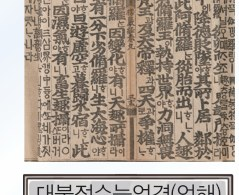
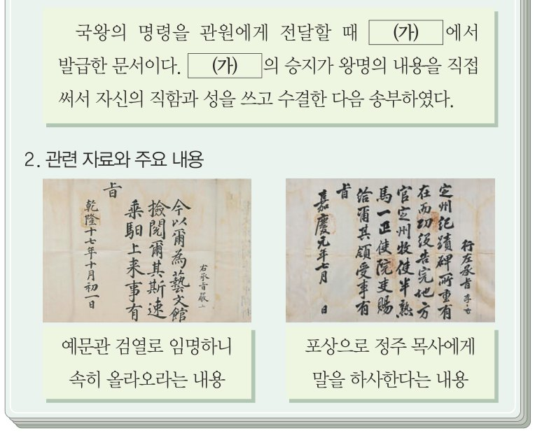
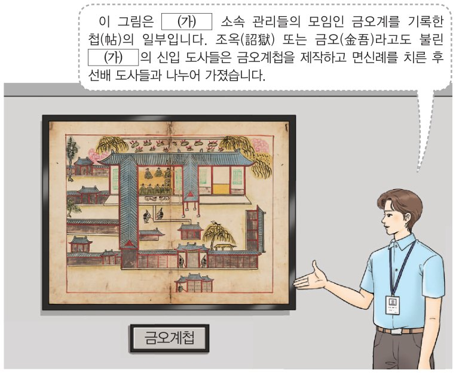
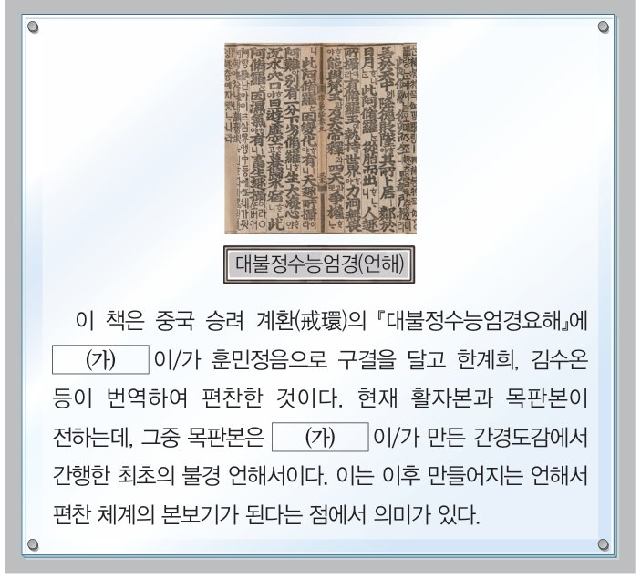
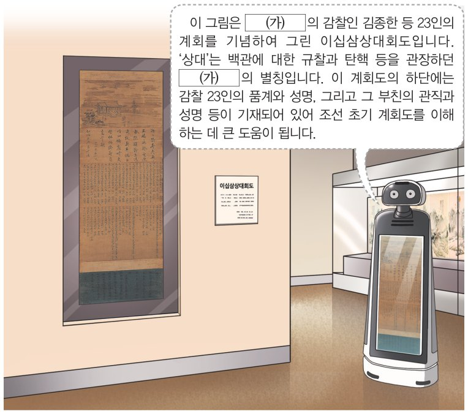
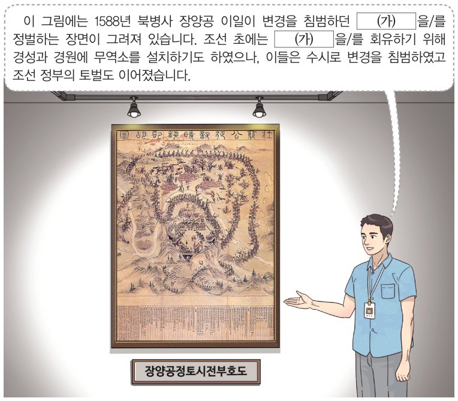
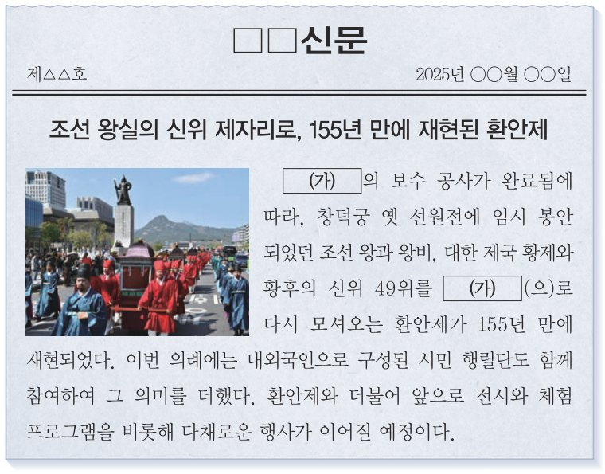
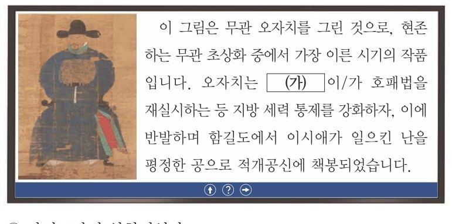
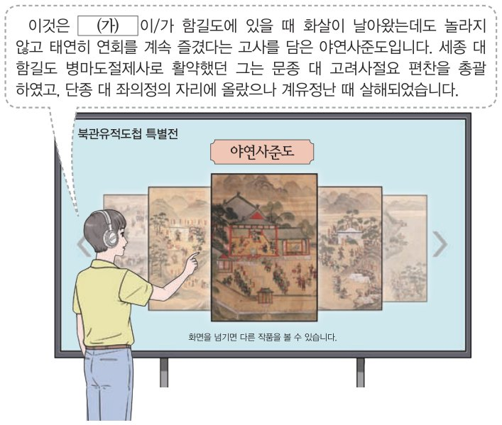

앞 단원에서 본 성리학 수용의 사상적 가교가 된 혜심의 유불일치설을 지나 공민왕의 성균관 순수 유학 기관 개편과 이제현의 ｢사략｣을 통해 성장한 신진사대부는 홍건적과 왜구를 물리치며 떠오른 신흥 무인 세력 이성계와 결합하였으나, 1388년 명나라의 철령위 설치 통고에 맞선 최영의 요동 정벌 강행을 계기로 결정적 분기점을 맞았습니다. 무리한 원정을 막고 정권을 장악하려는 목적 아래 압록강 하류 위화도에서 4불가론을 내세워 군사를 돌린 이성계의 위화도 회군(1388년) 이후, 고려 왕조의 틀 안에서 점진적 개혁을 꾀하던 온건파 사대부(이색·정몽주·길재)와 달리 급진파 사대부(정도전·조준·남은)는 권문세족과 불교 사원이 독점한 낡은 질서를 근본부터 갈아엎고 새 왕조를 세우려 하였습니다. 이를 위해 급진파는 먼저 권문세족의 불법 대농장을 몰수해 국가 재정과 신진사대부의 물적 토대를 세우겠다는 목적 아래 1391년(공양왕 3년) 조준 등의 주도로 경기 지방의 토지에 한해 전직·현직 관리에게 수조권을 지급하는 '과전법'을 단행하였고, 정몽주를 제거한 뒤 마침내 1392년 이성계를 왕(태조)으로 추대하여 조선을 건국하고 1394년 한양으로 천도하였습니다. 건국 설계자인 삼봉 정도전은 국왕 개인의 자의적 독재를 막고 현명한 재상이 정치를 이끄는 유교 국가를 세우고자 재상 중심의 정국 운영론을 ｢조선경국전｣과 ｢경제문감｣에 담고, 불교의 윤회설과 폐단을 조목조목 비판한 ｢불씨잡변｣을 지어 숭유억불의 기틀을 다지는 한편 요동 정벌을 추진하였습니다.
그러나 정도전이 추진한 재상 중심 체제와 공신·왕자 세력의 사병 보유, 그리고 막내아들 이방석의 세자 책봉은 건국에 핵심 공을 세운 왕자들의 거센 반발을 불렀습니다. 이에 이성계의 다섯째 아들 이방원은 재상과 공신의 사적 무력을 뿌리 뽑아 확고한 국왕 중심의 중앙 집권 국가를 세우겠다는 목적 아래 제1차 왕자의 난(1398년)으로 정도전과 방석을 제거하고, 제2차 왕자의 난(1400년)까지 제압한 뒤 제3대 왕 태종으로 즉위하였습니다. 태종은 왕권을 위협할 모든 싹을 도려내기 위해 첫째, 공신과 왕자들이 거느린 사병을 전면 혁파하여 군사 지휘권을 삼군부로 일원화하였고, 둘째, 의정부의 재상 합의를 거치지 않고 6조 판서가 국왕에게 직접 보고하고 재가를 받아 집행하는 '6조 직계제'를 실시하여 재상권을 약화시켰습니다. 셋째, 문하부 낭사를 분리해 독립 간쟁 기구인 사간원을 세워 고위 대신들을 견제하게 하고 국왕 직속 특별 사법 기구인 의금부를 강화하였으며, 넷째, 조세와 군역 자원을 빠짐없이 파악하고 국가 재정을 늘리려는 의도로 16세 이상 남정에게 신분증을 차게 하는 호패법(1413년), 억울한 백성이 북을 쳐 호소하는 신문고, 닥나무 지폐인 저화(1401년) 발행과 사찰 토지·노비 대거 몰수를 단행하였습니다. 이어 태종이 다져 놓은 강력한 왕권 위에서 즉위한 제4대 세종은 국왕 일방의 독주가 빚을 수 있는 정무 과부하와 신료의 소외를 넘어 왕권과 신권의 조화 속에서 유교 민본 정치를 꽃피우려는 목적을 세웠습니다. 이에 세종은 6조의 업무를 먼저 의정부의 3정승이 심의·합의를 거친 뒤 국왕의 재가를 받는 '의정부 서사제'를 운영하였고, 궁중 학술·정책 연구 기관인 집현전(1420년)을 설치하여 젊은 관료에게 유급 독서 휴가를 주는 사가독서와 국왕·신하가 경전과 국정을 토론하는 경연(세자 교육인 서연 포함)을 활성화하였습니다.
그러나 세종의 뒤를 이은 제5대 문종이 재위 2년여 만에 일찍 승하하고 12세의 어린 단종이 즉위하자 김종서·황보인 등 의정부 대신들에게 국정 권력이 쏠려 왕권이 극도로 위축되는 위기가 찾아왔습니다. 이에 세종의 둘째 아들 수양대군은 대신들의 수중에 들어간 권력을 되찾고 강력한 군주권을 다시 세우겠다는 욕망 아래 1453년 계유정난을 일으켜 김종서 등을 제거하고, 단종 즉위기에 일어난 함길도 도절제사 이징옥의 난까지 평정한 뒤 1455년 단종을 몰아내고 제7대 세조로 즉위하였습니다. 왕위 찬탈의 정통성 약점을 무력과 집권력으로 억누르려던 세조는 단종 복위 운동을 꾀한 사육신(성삼문·박팽년 등, 1456년)을 처형한 뒤 반발 세력의 온상이 된 집현전과 경연을 전면 폐지하고 다시 '6조 직계제'를 부활시켜 의정부 권한을 대폭 꺾었으며, 사헌부·사간원의 인사 동의 대상도 4품 이하로 축소하는 한편 통치 규범을 법전으로 굳히려 ｢경국대전｣ 편찬에 착수해 호전과 형전을 먼저 완성하였습니다. 이후 예종 대의 교열을 거쳐 즉위한 제9대 성종은 세조 이래 막대한 공신전과 권력을 독점하며 비대해진 훈구 공신 세력을 견제하고 유교 법치 체제를 완결하겠다는 확고한 목표를 세웠습니다. 이에 성종은 조선 최고 기본 법전인 ｢경국대전｣을 1485년 완성·반포하여 통치 체제를 법제화하고, 의정부 서사제를 복구하는 동시에 집현전을 계승한 홍문관(1478년)을 설치해 경연을 부활시켰으며, 김종직 등 영남 사림파를 중앙 언론 3사에 본격 등용하여 훈구 대신을 비판하게 하고 도첩제를 완전 폐지해 유교 국가의 정체성을 굳혔습니다.
｢경국대전｣으로 확립된 조선의 중앙 통치 기구는 군주의 권위를 지키면서도 특정 대신이나 국왕이 권력을 독점하지 못하도록 견제와 균형을 정교하게 맞추려는 목적 아래 설계되었습니다. 최고 국정 합의 기구인 의정부(영의정·좌의정·우의정)가 국정을 총괄하고 6조(이·호·예·병·형·공조)가 실무 행정을 분담하였으며, 국왕의 권력을 직접 뒷받침하는 핵심 기구로는 왕명의 출납을 맡은 비서 기관 승정원(도승지 등 6승지)과 왕명으로 반역죄·강상죄 등 국가 중대 범죄를 다스리는 특별 사법 기구 의금부(별칭 금오)를 두었습니다. 특히 승정원은 별칭으로 '은대' 또는 '후원'이라 불려 ｢은대계회도｣·｢은대조례｣와 ｢승정원일기｣ 같은 사료로 자주 등장합니다. 반면 국왕의 독단과 고위 관료의 부패를 감시하기 위해 국왕과 대등하게 시비를 가리는 청요직 언론 기구로 3사(사헌부·사간원·홍문관)를 두었는데, 앞 단원에서 배운 고려의 삼사가 단순한 회계·출납 기구였던 것과 달리 조선의 3사는 정치적 견제와 언로를 담당하는 언론 기구였습니다. 첫째, 사헌부(대사헌)는 백관을 감찰하고 기강과 풍속을 바로잡았으며(감찰들이 얼룩말인 총마를 타서 ｢총마계회도｣로 불림), 둘째, 사간원(대사간)은 국왕에게 바른말로 간쟁하고 논박하는 직무를 맡았습니다. 사헌부와 사간원을 아울러 양사 또는 대간이라 불렀는데, 고려의 대간이 모든 관리 임명에 동의권을 가졌던 것과 달리 조선은 왕권과 인사권 안정을 위해 대상을 축소하여 성종 ｢경국대전｣에서 5품 이하 관리 임명과 법령 개폐에 대한 서경권을 행사하도록 확정하였습니다. 셋째, 성종 때 집현전을 계승해 설치된 홍문관(별칭 옥당)은 궁중 서적을 관리하고 경연을 주관하며 국왕의 자문에 응하는 학술·언론 기구였습니다. 이 밖에 시정기와 실록 편찬·보관을 맡은 춘추관, 수도 한양의 행정·치안과 토지·가옥 소송을 판결한 한성부, 최고 유학 교육 기관 성균관, 고려의 서운관을 계승해 천문·지리·역법·측우를 맡은 관상감, 역관 양성과 역과를 관장한 사역원, 궁중 음악을 맡은 장악원이 중앙 통치 체제를 뒷받침하였습니다.
[핵심 비교표] 왕대별 국정 운영(6조 직계제 대 의정부 서사제) 및 중앙 통치 기구 체계
지방 행정 체제에서는 고려 시대의 분권적·지방 할거적 요소를 청산하고 전국을 국왕의 일원적 통치망 아래 묶으려는 목적이 뚜렷하게 나타납니다. 앞 단원에서 살펴본 고려는 5도 양계의 이원적 체제 속에서 지방관이 파견되지 않은 속현이 주현보다 많았고 향·부곡·소 같은 특수 행정 구역이 존재했으며, 지방 토착 향리가 외역전을 세습하며 조세·행정을 좌우하였습니다. 조선은 이 통치의 틈새를 메우기 위해 첫째, 전국을 8도로 일원화하고 각 도에 관찰사(감사)를 파견하였고, 둘째, 속현을 통폐합하고 향·부곡·소를 모두 일반 군현으로 승격·소멸시켜 전국 330여 개 모든 군현에 중앙에서 수령(부윤·목사·군수·현령·현감)을 파견하였습니다. 셋째, 지방 토착 세력이었던 향리의 지위를 대폭 격하해 수령 밑에서 6방(이·호·예·병·형·공방) 행정 실무만 세습적으로 보조하는 아전으로 만들고, 고려 태조의 사심관·기인 제도와 달리 혈연·지연에 따른 부패를 막기 위해 자기 출신 지역 수령 임명과 친족 간 같은 관청 근무를 금하는 상피제를 엄격히 적용하였습니다. 넷째, 지방 양반 사족들이 스스로 세운 유향소(향청, 좌수·별감)에 수령 보좌와 향리 감찰·풍속 교화를 맡기되, 계유정난 직후의 이징옥의 난(1453년)과 유향소 통제 강화에 반발해 길주에서 일어난 이시애의 난(1467년)을 진압한 세조가 유향소를 폐지하였다가 성종 때 다시 복설하였으며, 이들이 중앙 통제를 벗어나지 못하도록 서울에 고관이 관장하는 경재소를 두어 유향소를 통제하였습니다.
국방과 인재 양성·등용 제도 역시 양반 관료 국가의 안정과 국토 수호를 뒷받침하기 위해 정교하게 재편되었습니다. 군사 제도는 16세부터 60세까지 양인 남정이 군역을 지는 양인 개병제를 원칙으로 현역 군인인 정군과 정군의 비용을 대는 보인(보법)으로 편성하여, 중앙에는 5위(조선 후기 5군영과 구별)를 두고 지방에는 기존 군익도·영진군 이원 체제의 방어 공백을 메우려고 세조 대에 각 도 거점 수령(거진)이 관할 고을을 묶어 지역 단위로 독자 방어하는 진관 체제를 확립하였습니다. 나아가 정규 군역에서 제외된 향리·서리·잡학인·향교 교생·신량역천인·공·사노비 등으로 예비군인 잡색군을 편성해 평시에는 생업에 종사하다 유사시 지방 성곽 방어와 보조 전투를 맡겼습니다. 교육 제도는 유교적 통치 이념을 전파하고 관료를 길러내기 위해 서울에 최고 국립 대학인 성균관과 동·서·남·북 4곳의 중등 교육 기관인 4부학당(사학)을 두고, 지방 각 군현에는 향교를 설치하였습니다(기초 한자는 서당). 관리 등용에서는 5품 이상 관료가 사위와 외손자까지 혜택을 누리던 고려의 음서와 달리 조선은 음서 대상을 2품 이상 고위 관료 직계 자손으로 대폭 축소해 관직 세습을 줄였으며, 무과가 원칙적으로 시행되지 않고 승과가 존재했던 고려와 달리 불교 승과를 폐지하고 문과·무과·잡과를 모두 정규로 시행(3년마다 식년시 실시)하였습니다. 특히 문과는 유교 경전을 평가하는 생원시와 시문 실력을 묻는 진사시로 나뉜 예비 시험 소과(사마시)를 거쳐 성균관 입학이나 대과(문과 본시험) 응시 발판을 마련하였고, 무반은 무과로, 역관·의관·음양천문·율관 등 기술직은 잡과로 선발하였습니다.
대외 관계는 새 왕조의 안보를 지키고 국경·해안 약탈로 고통받던 백성을 보호하려는 목적 아래 명에 대한 사대와 주변 세력에 대한 교린을 구사하였습니다. 건국 초 요동 정벌 추진으로 명과 긴장을 겪었으나 태종 이후 명과의 사대 외교를 안정시켜 왕권의 국제적 승인을 얻고 조공·공무역을 통해 선진 문물을 수용하는 한편, 국경을 넘나들며 약탈을 일삼는 여진과 왜구에 대해서는 평화 시 회유하고 침략 시 단호히 토벌하는 양면책을 펼쳤습니다. 먼저 북방 여진족에 대해서는 태종 때 회유와 교역 통제를 위해 경성과 경원에 무역소(1406년)를 두었으나, 약탈이 그치지 않자 세종 때 무력으로 몰아낸 뒤 압록강 상류에 4군(최윤덕, 1433년)과 두만강 하류에 6진(김종서)을 개척하고 남부 백성을 이주시키는 사민 정책과 토관 제도를 펼쳐 오늘날의 압록강·두만강 국경선을 확정하였습니다. 남방 일본의 왜구에 대해서도 세종 원년인 1419년 이종무를 파견해 왜구 소굴인 쓰시마섬(대마도) 정벌을 단행하여 기세를 꺾은 뒤, 무역을 허락하되 통제하려는 뜻에서 3포(부산포·제포·염포)를 개항하고 세견선 50척·세사미두 200석으로 제한 교역한 '계해약조'(1443년)를 체결하였습니다(훗날 성종 때 신숙주의 ｢해동제국기｣로 외교 지침이 이어짐).
마지막으로 국가 재정과 관리의 경제 기반인 토지·수취 제도는 수조지 고갈과 관리의 농민 수탈이라는 모순을 해결하며 단계적으로 변천하였습니다. 1391년 과전법 시행 이후 전직 관리와 유가족(수신전·휼양전)에게 지급된 토지가 세습·누적되면서 새로 임용된 관리에게 줄 수조지가 바닥나는 위기가 닥쳤는데, 이는 앞 단원에서 배운 고려 문종 때 경정전시과(1076년)가 전직 관리를 배제하고 현직에게만 수조권을 지급했던 상황과 똑같은 구조적 모순이었습니다. 이에 세조는 1466년 세습되던 수신전·휼양전을 폐지하고 오직 '현직 관리'에게만 수조권을 지급하는 '직전법'을 단행하였습니다. 그러나 퇴직과 동시에 수조권을 잃게 된 현직 관리들이 재임 기간 중 농민에게서 과도하게 세금을 거두어들이는 부작용이 발생하자, 제9대 성종은 관리의 농민 직접 지배와 불법 수탈을 원천 차단하려는 목적에서 1470년 지방 관청이 직접 조세를 거두어(관수) 관리에게 나누어 주는(관급) '관수관급제'를 시행하였습니다(무신정권 붕괴 후 경기 8현에 지급한 고려 원종 때의 녹과전과 구별). 이후 16세기 명종 때에 이르러 직전법마저 완전히 폐지되면서 관리에게는 토지 수조권 대신 곡물·베 같은 현물 급여인 '녹봉'만 지급하게 되었고, 지주전호제가 널리 확산되었습니다. 한편 전세 징수 방식에서는 관리가 직접 작황을 살피며 자의적 판정(답험손실법)으로 농민에게 피해를 주던 폐단을 막기 위해, 세종이 17년간 여론 수렴과 시험 시행을 거쳐 토지 비옥도 6등급(전분6등법)과 풍흉 9등급(연분9등법)에 따라 1결당 최저 4두에서 최고 20두까지 공정하게 차등 과세하는 공법(1444년)을 확정하였습니다(조선 후기 인조 때 1결당 4두 고정 영정법 및 광해군부터 숙종까지 공납 개혁 대동법과 구별).
[핵심 비교표] 고려 대비 조선의 지방 · 군사 · 교육 · 과거 · 대외 관계 및 토지·수취 변천
제도 영역
조선 전기 핵심 제도 및 사료 키워드
고려 · 조선 후기 대비 오답 판별 포인트
지방 8도 · 향촌 통제
· 전국 8도(관찰사) · 모든 군현 수령 파견(속현·향·부곡·소 소멸) · 향리 6방 행정 보조 아전 격하, 상피제 실시 · 유향소(좌수·별감)(세조 이징옥·이시애의 난 후 폐지 ➔ 성종 복설) ➔ 서울 경재소 통제
· 고려는 5도 양계·속현 다수·향부곡소 존속·외역전 세습 향리 · 고려 태조(사심관·기인) vs 조선(출신지 수령·친족 동관 금지 상피제)
군사 · 교육 · 과거 · 음서
· 군사: 양인 개병제·보법, 중앙 5위 + 지방 진관 체제 + 예비군 잡색군 · 관학: 성균관(최고) · 4부학당(서울 중등) · 향교(지방) · 과거·음서: 승과 폐지, 문·무·잡과 정규 시행(소과: 생원시·진사시), 음서 2품 이상 직계 축소
· 세조 5위·진관 체제 vs 조선 후기 5군영(숙종 금위영 완성) · 고려(무과 원칙적 미실시·승과 존재·5품 음서[사위/외손자])와 정반대!
사대교린 대외 관계
· 명나라 사대(태종 이후 안정) / 여진·일본 교린 · 여진: 태종 경성·경원 무역소(1406) ➔ 세종 4군(최윤덕)·6진(김종서)·사민 정책 · 일본: 세종 이종무 쓰시마섬 정벌(1419) ➔ 3포 개항·계해약조(1443, 50척·200석) ➔ 성종 신숙주 ｢해동제국기｣(1471)
· 4군 6진 개척과 사민 정책으로 압록강·두만강 국경선 확정(세종) · 쓰시마 정벌·계해약조(세종) vs ｢해동제국기｣(성종) 왕대 구별
· 고려 문종 경정전시과(1076, 현직만) = 조선 세조 직전법(1466) · 세종 공법(전세 차등) vs 인조 영정법(1결 4두 고정) vs 광해군 대동법(공납)
3. 조선 전기(15세기) 왕대별 민족 문화·과학·법전·예술의 황금기
조선 전기 15세기의 찬란한 민족 문화는 고려 개경의 낡은 불교·귀족 질서를 딛고 새 왕조의 정통성과 민본·자주적 통치 이념을 공간과 문헌, 과학과 예술로 구현하려는 역대 국왕들의 과제 속에서 단계적으로 꽃피웠습니다. 건국 직후 제1대 태조(1392년부터 1398년까지)는 유교적 왕도 정치의 새 도읍임을 하늘과 백성에게 선포하려는 목적 아래, 1394년 한양 천도와 함께 성리학적 도읍 배치 원칙인 좌묘우사에 맞추어 한양 도성을 쌓고 남대문인 숭례문(1398년 완공, 세종 1448년 개축), 조선 역대 왕과 왕비의 신주를 모신 종묘 정전(1395년 창건, 임진왜란 소실 후 광해군 때 재건, 유네스코 세계유산), 토지와 곡식의 신에게 제사 지내는 사직단, 그리고 조선의 법궁인 경복궁(1395년 창건, 정도전이 근정전·사정전·강녕전 등 전각 명명; 임진왜란 소실 후 19세기 고종 대 흥선대원군이 중건하고 건청궁에서 을미사변 발생)을 세웠습니다. 동시에 정도전은 유교 통치 규범과 재상 중심 정국 운영론을 체계화한 ｢조선경국전｣과 ｢경제문감｣, 불교 비판서 ｢불씨잡변｣을 저술하였고, 태조는 고구려 평양성 천문도 탁본을 바탕으로 돌에 새겨 새 왕조의 천명을 과시한 ｢천상열차분야지도｣(1395년)를 제작하였습니다. 이어 제3대 태종(1400년부터 1418년까지)은 다진 왕권 위에서 유교 서적 보급과 세계 지리 인식 확장, 도성 기반 정비를 꾀하여 경복궁의 이궁으로 자연 지형과 조화를 이룬 창덕궁(1405년 창건, 인정전·후원과 정조 대 규장각 주합루 조성, 임진왜란 후 광해군 때 가장 먼저 재건되어 실질적 정궁 수행, 유네스코 세계유산)을 세우고 청계천의 광통교를 돌다리로 개축하였습니다. 또한 주자소를 설치해 구리 금속활자인 계미자(1403년)를 주조하여 서적 인쇄 기반을 닦았고, 권근·이회 등이 참여해 중국·조선·일본뿐 아니라 인도·아라비아·유럽·아프리카까지 그려 넣은 현존 동양 최고(가장 오래된)의 세계 지도 ｢혼일강리역대국도지도｣(1402년)를 제작하였습니다.
태조와 태종이 닦은 토대 위에서 즉위한 제4대 세종(1418년부터 1450년까지)은 중국 문물의 단순한 모방에서 벗어나 한반도의 위치와 풍토, 백성의 실생활에 맞는 자주적 과학·기술·문화 체계를 세우겠다는 뚜렷한 민본의 목적을 품고 집현전을 중심으로 유례없는 황금기를 열었습니다. 먼저 인쇄 분야에서는 밀랍 고정 방식이던 계미자의 인쇄 속도 한계를 극복하고자 활자판 조립 기술을 개량한 경자자(1420년)에 이어, 정교한 납작 활자로 조판 혁명을 이룬 갑인자(1434년)를 주조하여 대량 출판의 길을 열었습니다. 천문·역법 분야에서는 중국 베이징 기준 달력을 그대로 쓰면 한양의 일식·월식 시각과 농절기가 어긋나는 불편을 해결하려 이순지·김담 등이 원나라 수시력과 이슬람 회회력을 바탕으로 한양을 기준으로 해·달·오성의 운동을 계산한 자주적 역법서 ｢칠정산｣ 내편(1442년)과 외편(1444년)을 편찬하였습니다. 아울러 정확한 하늘 관측과 백성의 일상 편의, 과학적 농정을 위해 장영실 등이 천체 관측 기구인 혼천의·간의를 만들고, 종로 등에 설치해 백성이 누구나 시각과 절기를 읽을 수 있게 한 공공 해시계 앙부일구, 자동으로 종과 북을 쳐 표준시를 알리는 물시계 자격루, 그리고 전국 각지의 강수량을 과학적으로 측정해 농업 정책에 반영한 세계 최초의 우량계 측우기(1441년)를 발명하였습니다. 음악 분야에서도 자주적 궁중 의례 음악을 정립하려 박연이 국산 돌로 편경을 제작하고 아악을 정리하였으며, 세종이 직접 ｢여민락｣을 작곡해 백성과 함께 즐기는 왕도 정치를 노래하였습니다.
세종의 민본·자주 정신은 농학·의학·문자·윤리·지리·회화와 역사 편찬에서도 고스란히 결실을 맺었습니다. 건조한 중국 화북 지방 농서가 우리 풍토에 맞지 않아 농민이 겪던 어려움을 해결하고자 정초·변효문이 전국 노농들의 경험을 모아 우리 풍토에 맞는 최초의 독자 농서 ｢농사직설｣(1429년)을 펴냈고, 값비싼 중국 약재를 구하기 힘든 백성을 살리기 위해 국산 약재와 치료법을 정리한 ｢향약집성방｣(1433년)과 국내외 의서를 망라한 백과사전 ｢의방유취｣(1445년 편찬)를 편찬하였습니다(조선 후기 광해군 때 허준의 ｢동의보감｣과 구별). 무엇보다 어려운 한자를 몰라 억울한 송사를 겪고 유교 윤리에서도 소외되던 백성을 깨우치겠다는 애민 정신으로 1443년 훈민정음을 창제하고 1446년 해례본을 반포하였으며, 새 글자를 널리 보급하고 왕조의 정당성과 교화를 펴기 위해 ｢용비어천가｣, 수양대군이 소헌왕후 명복을 빌려 석가모니 일대기를 엮은 ｢석보상절｣(1447년), 그리고 이를 읽고 세종이 직접 지은 한글 찬불가 ｢월인천강지곡｣이 잇따라 간행되었습니다. 사회·통치 분야에서는 충신·효자·열녀 사례를 그림과 함께 푼 윤리 교화서 ｢삼강행실도｣(1434년, 설순 등)를 펴냈고(훗날 16세기 중종 대 ｢이륜행실도｣로 보완), 맹사성 등이 전국 군현 연혁과 지리를 정리한 ｢신찬팔도지리지(팔도지리지)｣(1432년)는 호구·토지·우산도(독도)와 울릉도 기록을 보완해 단종 2년(1454년) 현존 최고 전국 관찬 지리지인 ｢세종실록 지리지｣로 완성되었습니다. 회화에서는 안평대군의 꿈을 바탕으로 좌하단의 험준한 현실 산수에서 우상단의 복숭아꽃 핀 이상향으로 나아가는 대각선 구도를 펼친 안견의 ｢몽유도원도｣(1447년)와 명나라 절파 화풍을 수용해 바위에 팔을 괴고 흐르는 물을 응시하는 선비의 내면을 그린 강희안의 ｢고사관수도｣가 조선 초기 회화의 정점을 세웠습니다. 이러한 세종 대의 전 왕조 역사 정리 사업은 제5대 문종(1450년부터 1452년까지) 때 김종서·정인지 등이 새 왕조의 정통성을 밝히며 편찬을 마무리한 기전체 정사 ｢고려사｣(1451년)와 편년체 역사서 ｢고려사절요｣(1452년)의 최종 완성 및 화차(신기전) 대량 제작으로 완결되었습니다.
뒤이어 계유정난으로 정권을 잡고 즉위한 제7대 세조(1455년부터 1468년까지)는 왕위 찬탈이라는 정치적 부담을 딛고 왕실의 권위와 정통성을 확고히 다지며 민심을 어루만지겠다는 목적 아래, 법전·역사·지리·불교·도자 문화 사업을 힘있게 밀어붙였습니다. 세조는 유교적 억불 기조 속에서도 불교의 정신적 위안과 한글 보급을 결합하여 세종이 지은 ｢월인천강지곡｣과 자신이 왕자 시절에 엮은 ｢석보상절｣을 합쳐 증보한 ｢월인석보｣(1459년)를 간행한 데 이어, 1461년 불경 국역 전담 기구인 '간경도감'을 설치하였습니다. 특히 간경도감에서는 세조가 직접 한문 경전에 한글 구결(토)을 달고 신미·한계희·김수온 등이 우리말로 번역(언해)한 최초의 불경 언해본 ｢능엄경언해｣(1461년 을해자 활자본에 이어 1462년 간경도감 목판본 간행) 등 수많은 언해 불서를 펴내어 훈민정음이 백성과 사찰 사회로 널리 퍼지는 데 결정적 구실을 하였습니다. 또한 서울 도심에 원각사를 창건하고 앞 단원에서 본 고려 원 간섭기(충목왕 1348년) 개성 경천사지 10층 석탑의 대리석 다층 양식을 직접 계승한 원각사지 10층 석탑(1467년)을 건립하였습니다. 국가 편찬과 공예 기반에서도 ｢경국대전｣ 편찬을 시작하고, 양성지 등이 참여해 태조부터 문종까지 4대 임금의 선정을 모아 후대 왕의 거울로 삼은 ｢사조보감(국조보감의 효시)｣(1458년)과 ｢동국지도｣·지리 편찬 사업을 추진해 훗날 ｢동국여지승람｣의 토대를 놓았으며, 1467년경에는 경기도 광주에 왕실 전용 국영 도자기 가마인 관요(사옹원 분원)를 설치해 순백자 시대의 문을 열었습니다.
15세기 말 제9대 성종(1469년부터 1494년까지) 대에 이르러 조선 정부는 세조 이래의 갈등을 제도적으로 수습하고, 새 왕조의 정통성과 도덕적 우월성을 법전·의례·역사·지리·문학·음악으로 집대성하여 성리학적 사회 질서를 백성의 일상까지 뿌리내리려는 목적을 완결하였습니다. 성종 때에는 1485년 ｢경국대전｣ 최종 완성·반포와 더불어 앞 단원에서 본 고려의 자녀 균분 상속·윤번 봉사·서류부가혼·재가 자유 전통을 넘어 재가한 여성의 자손이 문과에 응시하지 못하도록 법제화하며 성리학적 가부장 질서를 정착시켰습니다. 또한 국가의 길례·가례·빈례·군례·흉례 다섯 의례를 규정한 ｢국조오례의｣(1474년)를 비롯해, 고조선부터 고려 말까지의 역사를 신진사대부의 성리학적 정통론과 사론으로 엮은 서거정 등의 편년체 통사 ｢동국통감｣(1485년), 신라부터 조선 초까지 우리 문인들의 시문을 모은 ｢동문선｣(서거정 등, 1478년), 양성지의 지리 정리 성과를 이어 노사신·서거정 등이 전국의 지리·풍속·인물을 망라한 인문 지리서 ｢동국여지승람｣(1481년), 조선 최고의 궁중 음악 이론과 악기 도설을 담은 ｢악학궤범｣(성현 등, 1493년), 그리고 신숙주가 일본·유구(오키나와)의 지리·풍속·외교 관례를 정리한 ｢해동제국기｣(1471년)가 잇따라 완성되었습니다. 건축에서는 1483년 세종이 상왕 태종을 위해 지은 수강궁 터를 성종이 확장해 창경궁(명정전, 임진왜란 소실 후 광해군 1616년 재건)을 창건함으로써 15세기 경복궁·창덕궁·창경궁 체제를 갖추었으니, 이는 임진왜란 이후 17세기 광해군이 서쪽 궁궐로 세운 경희궁(경덕궁) 및 1593년 선조 임시 행궁에서 출발해 광해군이 이름 짓고 고종이 대한제국 황궁(중화전·석조전·정관헌·을사늑약 중명전)으로 삼았다가 1907년 개칭된 경운궁(덕수궁)과는 시대가 뚜렷이 구별됩니다.
한편 15세기 조선 전기의 도자기 공예는 왕조 교체와 통치 이념의 정착이라는 시대적 흐름을 흙과 빛깔에 고스란히 담아내며 전환하였습니다. 고려 말 왜구 침입과 사회 혼란 속에 강진·부안의 청자 가마가 쇠퇴하자 지방으로 흩어진 장인들이 실용적 그릇 위에 백토 분장을 입히며 새로운 돌파구를 찾았고, 이에 앞 단원에서 본 고려 말 상감청자 전통을 이은 15세기에서 16세기까지 조선 초기에 회색 흙 바탕에 백토 분장을 입혀 자유분방하고 소박한 서민적 미감을 드러낸 분청사기가 크게 유행하였습니다. 미술사학자 고유섭이 '분장회청사기'를 줄여 명명한 분청사기는 도장을 촘촘히 찍는 인화문, 배경을 긁어 무늬를 띄우는 박지문, 철사 안료로 물고기를 그린 철화 어문, 붓으로 백토를 쓸어 바른 귀얄문과 그릇을 백토 물에 담근 덤벙문 등으로 활달하게 발전하였습니다. 그러나 15세기 후반 경기도 광주에 왕실 관요(사옹원 분원)가 자리 잡고 성리학적 검소함과 결백함·절제미를 중시한 사대부 취향이 사회 전반에 뿌리내리면서, 분청사기는 점차 설 자리를 잃고 티 없이 맑은 순백자와 아라비아 코발트 안료인 회회청으로 그림을 그린 청화 백자가 주류로 자리 잡았으며(17세기에서 18세기에는 백자 달항아리로 발전), 이처럼 성종 대 완성된 유교 정치·문화 체제 속에서 훈구 공신 세력을 견제하려 중앙 정계에 진출한 사림파는 다음 장에서 살펴볼 4대 사화의 시련을 거쳐 붕당 정치를 형성하게 됩니다.
종묘 정전 태조 1395년 창건(임란 후 광해군 재건) · 역대 왕과 왕비 신주 봉안
창덕궁 태종 1405년 창건 · 임란 후 실질적 정궁(사진은 후원 주합루 일대)
안견 ｢몽유도원도｣ 세종 1447년 제작 · 현실에서 복숭아꽃 핀 이상향으로 나아가는 구도

｢능엄경언해｣ 세조 간경도감(1462년 목판본) · 세조의 한글 구결(토)과 국역 언해
[핵심 비교표] 15세기 왕대별 민족 문화 · 과학 · 법전 · 편찬서 및 도자기 변천
왕대 · 분야
핵심 기출 단서 및 대표 유물 · 편찬서
시험장 0.5초 판별 및 오답 주의점
태조 · 태종 (1392년부터 1418년까지)
· 태조: 한양 도성·종묘 정전·사직단·경복궁(근정전)·숭례문, 정도전 ｢조선경국전｣·｢경제문감｣·｢불씨잡변｣, 고구려 천문도 계승 ｢천상열차분야지도｣(1395) · 태종: 창덕궁(1405)·광통교, 주자소 계미자(1403), 현존 동양 최고 세계지도 ｢혼일강리역대국도지도｣(1402)
· ｢천상열차분야지도｣(태조, 1395) vs ｢혼일강리역대국도지도｣(태종, 1402) 제작 왕대 혼동 주의! · 주자소 계미자(태종 1403) vs 조판 개량 갑인자(세종 1434)
세조 ➔ 성종 완성 · 5대 궁궐 · 도자기• 세조: ｢월인석보｣·간경도감·｢능엄경언해｣(한글 구결)·원각사지 10층 석탑(경천사지 탑 계승)·양성지 ｢사조보감｣(국조보감 효시)·광주 관요 • 성종: ｢경국대전｣(1485)·｢국조오례의｣·｢동국통감｣·｢동문선｣·｢동국여지승람｣·｢악학궤범｣·｢해동제국기｣·창경궁(1483) • 도자기: 상감청자 ➔ 분청사기(고유섭, 인화·박지·철화문) ➔ 관요 순백자·청화 백자(회회청)·달항아리
※ 궁궐 연대 구분: 15세기 창건(태조 경복궁·종묘·숭례문 / 태종 창덕궁 / 성종 창경궁)도 임란 소실 후 17세기 광해군·19세기 대원군이 재건! 경희궁(경덕궁)·경운궁(덕수궁)은 17세기 이후!
PART 2 · 단원별 실전 기출문제 워크북 (27문항)[ 내 득점: / 27문항 ]
📱 Galaxy S26 Ultra 슬라이드 덱문항 1 / 27
1 / 30
01제79회 한능검 심화 Q18 (3점)
정답:
다음 자료의 (가)에 대한 설명으로 옳은 것은? [3점]
[출제 사료 및 제시문]이곳은 충청남도 서천 문현서원으로 (가)의 위패가 모셔져 있습니다. 가정 이곡의 아들인 그는 고려와 원나라 과거 시험에 모두 급제하였으며 문하시중을 역임했습니다. 성리학을 깊이 연구하여 많은 문하생을 배출하였고, 그가 남긴 시문집인 『목은집』이 전해집니다.
[핵심 해설][목은 이색과 성균관의 신진사대부] 서천 문현서원, 삼은(포은 정몽주, 야은 길재, 목은 이색) 중 한 명인 목은 이색
① [틀림] 신라 귀족 출신의 유학자 김대문(성덕왕 대)의 저서입니다. (통일신라는 문무왕의 삼국 통일 완수 직후 신문왕이 김흠돌의 난 진압, 관료전 지급·녹읍 폐지, 국학 설립, 9주 5소경과 9서당 10정 완비로 중대 전제 왕권을 확립하였습니다.)
② [틀림] 인종의 명을 받아 관찬 사서인 『삼국사기』(1145년)를 편찬한 인물은 개경 문벌 귀족 출신 유학자 김부식입니다. 묘청의 서경 천도 운동을 진압한 뒤 유교적 합리주의 사관으로 삼국의 역사를 기전체로 정리하였습니다.
③ [틀림] 정도전은 성리학적 유교 이념을 통치 철학으로 확립하기 위해, 불교의 인과응보설, 윤회설, 영혼불멸설 등을 철학적으로 정면 조목조목 비판하고 유학의 합리적 현실관과 우월성을 논리적으로 입증한 명저 『불씨잡변(1398년)』을 저술하여 억불숭유 정책의 이론적 기틀을 완성하였습니다.
④ [틀림] 퇴계 이황은 성리학적 유교 윤리를 향촌 사회에 정착시키고 미풍양속을 진작시키기 위해, 1556년 자신의 고향인 경상도 안동에서 중국 여씨 향약을 조선의 실정에 맞게 수정·보완한 '예안 향약'을 직접 기초하여 시행하였으며, 사림 중심의 향촌 자치 질서를 확립하는 데 크게 기여하였습니다.
⑤ [옳음 · 정답] 이색은 공민왕의 후원을 받아 성균관 대사성(최고 책임자)에 취임한 뒤, 정몽주, 정도전, 이숭인 등 뛰어난 유학자들을 교관으로 기용하여 성리학을 확산시키고 고려 말 신진사대부를 대거 육성한 정신적 스승입니다.
02제79회 한능검 심화 Q19 (2점)
정답:
다음 자료와 관련된 역사적 사실(시대·인물·사건·문화유산)에 대한 설명으로 옳은 것은? [2점]
[출제 사료 및 제시문]권채 등을 불러 왕이 명하기를, "내가 너희를 집현전 관리로 임명한 것은 글을 읽혀 실질적인 효과가 있게 하기 위함이었다. 그러나 직무에 얽매여 전념할 여유가 없으니 지금부터 집에서 전심으로 글을 읽어 성과를 내도록 하라."
[핵심 해설][사가독서제와 민족 문화 융성] 세종은 중국 수시력과 아라비아 회회력을 참고하여, 한반도 역사상 최초로 서울(한양)의 위도를 기준으로 천체 운동을 계산한 독자적 역법서인 『칠정산』(내편과 외편)을 편찬하였습니다.
① [틀림] 태종 이방원은 활발한 서적 편찬과 유교 문물 정비를 위해, 1403년 활자 주조 전담 관청인 '주자소'를 설치하고 조선 최초의 금속 활자인 '계미자'를 주조하도록 하였습니다. 비록 밀랍으로 활자를 고정하여 하루 인쇄량이 몇 장에 불과한 한계가 있었으나, 세종 대 경자자(1420년)와 갑인자(1434년)의 눈부신 기술 혁신으로 이어지는 초석이 되었습니다.
② [틀림] 허준이 임진왜란 직후 선조의 명을 받아 집필하여 완성·간행한 『동의보감』은 광해군 2년(1610년)에 완성되었습니다(세종 때 편찬된 대표 의학서는 『향약집성방』과 『의방유취』입니다).
③ [틀림] 영조의 『속대전』 이후 법전을 통합 편찬한 『대전통편』은 정조 때 반포되었습니다.
④ [틀림] 성종은 신숙주, 강희맹 등에게 명하여 길례, 가례, 빈례, 군례, 흉례 등 국가의 5대 전례를 체계적으로 정리한 『국조오례의』를 완성(1474년)하였습니다.
⑤ [옳음 · 정답] 세종은 중국 수시력과 아라비아 회회력을 참고하여, 한반도 역사상 최초로 서울(한양)의 위도를 기준으로 천체 운동을 계산한 독자적 역법서인 『칠정산』(내편과 외편)을 편찬하였습니다.
03제79회 한능검 심화 Q20 (2점)
정답:
다음 자료에 나타난 폐단을 해결하기 위한 정책으로 옳은 것은? [2점]
[출제 사료 및 제시문]대비가 말하기를, "직전은 사람들이 모두 폐단이 있다고 한다. 특히 그 주인이 지나치게 거둘 뿐 아니라 바지기를 독촉하는 노복들이 제멋대로 거두어 백성들이 심히 고통스러워한다." 이극증이 말하기를, "전에 과전법에서는 휼양전, 수신전을 물려받았는데 이를 없애고 직전으로 만들었으나, 전세를 거두는 자들 중에는 함부로 거두어들여 백성들의 원망을 사는 자가 있습니다."
[핵심 해설][직전법의 폐단과 관수관급제] 세조 때 현직 관리에게만 지급한 직전법에서, 관리들이 수조권(세금 거둘 권리)을 악용하여 백성을 가혹하게 착취하는 폐단이 발생하자 성종(1470년)이 관수관급제를 시행하였습니다.
① [틀림] 940년 인품과 공로를 기준으로 관리와 공신들에게 토지를 분급한 제도는 고려 태조의 역분전입니다.
② [틀림] 5품 이상 귀족에게 세습 가능한 토지로 지급한 공음전은 고려 시대의 귀족 우대 제도입니다.
③ [틀림] 무신정권 붕괴 후 관리들의 녹봉 부족을 메우기 위해 지급한 녹과전은 고려 원종 때입니다.
④ [옳음 · 정답] 관리들이 직접 농민에게 수조권을 행사하는 과정에서 과다 수탈이 자행되자, 성종(1470년)은 국가 관청이 농민에게 전세를 직접 거둔 뒤 관리에게 나누어 주는 '관수관급제'를 전격 시행하여 양반의 토지 지배력을 약화시키고 국가의 토지 지배권을 강화하였습니다.
⑤ [틀림] 곡식을 거둘 전지와 땔감을 얻을 시지를 18등급으로 나누어 지급한 것은 고려의 전시과 제도입니다.
04제79회 한능검 심화 Q24 (2점)
정답:
다음 자료의 (가)에 대한 설명으로 옳은 것은? [2점]
[출제 사료 및 제시문]

[역사 용어 해설: 유지] · 개요: 국왕의 명령을 관원에게 전달할 때 (가)에서 발급한 문서이다. 승지가 왕명의 내용을 직접 써서 자신의 직함과 성을 쓰고 수결한 다음 송부하였다. · 관련 내용: 예문관 검열로 임명하니 속히 올라오라는 내용, 포상으로 정주 목사에게 말을 하사한다는 내용 등
[핵심 해설][금성대군의 복위 모의와 계유정난 직후 이징옥의 난] 1453년 수양대군의 계유정난으로 권력을 빼앗기고 결국 1455년 강제 퇴위당한 후 노산군으로 강봉된 비운의 군주 ➔ (가) 단종
① [옳음 · 정답] 단종 원년인 1453년 10월, 수양대군이 계유정난을 일으켜 영의정 황보인과 우의정 김종서 등을 살해하고 정권을 장악하자, 김종서의 신임을 받던 함길도 도절제사 이징옥이 수양대군의 정권 찬탈에 격분하여 군사를 일으키고 후금을 자칭하는 대진국을 선포하며 반란을 일으켰습니다(1453년 단종 재위기).
② [틀림] 인조반정(1623년) 직후 논공행상에 불만을 품은 평안도 병마절도사 이괄이 반란을 일으켜 한양을 점령하고 흥안군을 왕으로 추대한 것은 인조 2년(1624년)입니다.
③ [틀림] 숙종 6년(1680년) 남인의 영수 허적이 국왕의 허락 없이 궁중 기름장막(유악)을 무단 사용한 사건을 빌미로 서인이 남인을 대대적으로 축출한 환국입니다.
④ [틀림] 중종반정 공신들의 거짓 훈록(위훈)을 삭제하려던 사림파 조광조 일파가 훈구 세력의 남곤·심정 등에 의해 숙청당한 기묘사화는 중종 14년(1519년)입니다.
⑤ [틀림] 전라도 장수의 정여립 대동계 모반 혐의를 빌미로 정철 등 서인이 동인 세력 1천여 명을 대거 숙청한 기축옥사는 선조 22년(1589년)입니다.
06제78회 한능검 심화 Q20 (3점)
정답:
다음 자료의 (가)에 대한 설명으로 옳은 것은? [3점]
[출제 사료 및 제시문]

"이 그림은 (가) 소속 관리들의 모임인 금오계를 기록한 첩의 일부입니다. 조옥 또는 금오라고도 불린 (가)의 신입 도사들은 금오계첩을 제작하고 면신례를 치른 후 선배 도사들과 나누어 가졌습니다."
[핵심 해설][국왕 직속 특별 사법 기구 의금부] 금오, 조옥(임금의 어명으로 가두는 감옥), 실무 관직인 도사(종5품) ➔ 의금부
① [틀림] 수도 한양의 토지와 가옥 소송, 호적 관리, 시장 통제 및 순찰·치안을 총괄한 행정 관청은 한성부입니다.
② [틀림] 천체 관측과 달력(역법) 제작, 일식·월식 관측, 기상 예보를 전담한 관청은 관상감(서운관)입니다.
③ [틀림] 정조가 왕실 도서관이자 정책 연구 기관으로 육성하였으며 유득공·이덕무·박제가 등 서얼 출신을 검서관으로 발탁한 기구는 규장각입니다.
④ [틀림] 궁중 서적 보관과 문한 작성, 그리고 국왕과의 학문 토론인 경연을 전담한 언론 삼사 기구는 홍문관(옥당)입니다.
⑤ [옳음 · 정답] 의금부는 태종 때 설립된 국왕 직속의 최고 특별 사법 기구로서, 일반 사법 기관(형조)이 다루지 못하는 국가 반역죄(역모), 왕실 모독죄, 부모나 웃어른을 해친 강상죄 등 중대한 국사범을 왕명을 받들어 직접 취조하고 판결하는 전권을 행사하였습니다.
07제78회 한능검 심화 Q21 (3점)
정답:
다음 자료와 관련된 역사적 사실(시대·인물·사건·문화유산)에 대한 설명으로 옳은 것은? [3점]
[출제 사료 및 제시문]"그가 중대한 일을 처리하고 대의를 결단함은 마치 강이 흘러가는 것과 같아서 조야가 의지하고 중히 여겼다. 오랫동안 예조를 관장하여 사대교린을 자신의 소임으로 삼았다.... 그는 직접 일본에 건너가 무릇 산천·풍속 등을 두루 알아서 『해동제국기』를 지어 올렸다."
[핵심 해설][보한재 신숙주의 해동제국기와 훈민정음 편찬] 세종부터 성종까지 6대 임금을 섬긴 집현전 학사 출신 훈구 대신, 일본 통신사 서장관 파견 후 일본과 유구국의 지리·풍속·외교 관례를 집대성한 『해동제국기』(1471년) 저술 ➔ 보한재 신숙주
① [옳음 · 정답] 신숙주는 세종 대 집현전 집현관(응교·수찬)으로서 정인지, 성삼문, 박팽년, 최항 등과 함께 요동에 유배되어 있던 명나라 음운학자 황찬을 13차례나 왕래하며 자문을 구하였고, 1446년 훈민정음의 창제 원리와 음운 체계를 해설한 『훈민정음 해례본』 편찬에 핵심 주역으로 참여하였습니다.
② [틀림] 중종 38년(1543년) 풍기군수로 부임하여 고려 말 성리학의 선구자 안향을 배향하고자 최초의 사액 서원 모태가 된 백운동서원을 세운 인물은 신재 주세붕입니다.
③ [틀림] 효종 즉위년(1649년) 청나라에 당한 삼전도의 굴욕을 씻고 명나라에 대한 의리를 지키기 위해 북벌론의 당위성을 적은 상소문 「기축봉사」를 올린 산림의 영수는 우암 송시열입니다.
④ [틀림] 퇴계 이황은 성리학적 유교 윤리를 향촌 사회에 정착시키고 미풍양속을 진작시키기 위해, 1556년 자신의 고향인 경상도 안동에서 중국 여씨 향약을 조선의 실정에 맞게 수정·보완한 '예안 향약'을 직접 기초하여 시행하였으며, 사림 중심의 향촌 자치 질서를 확립하는 데 크게 기여하였습니다.
⑤ [틀림] 주자의 『가례』를 조선의 실정에 맞게 주석하고 도해를 곁들여 예학을 조선 성리학의 중심 학문으로 정립한 예학의 종장은 사계 김장생(선조부터 인조 대까지)입니다.
08제77회 한능검 심화 Q19 (1점)
정답:
다음 자료의 (가)에 대한 설명으로 옳은 것은? [1점]
[출제 사료 및 제시문]· "문하부 좌우 정승을 고쳐 의정부 좌우 정승으로... 문하부의 이름을 혁파하고, 낭사를 고쳐 (가)으로 하였다." · "(가)의 대사간 성현 등이 상소하였다: '신 등이 삼가 생각건대 신하를 다루는 도리는 간사하고 올바른 것을 분별하여...'"
[핵심 해설][문하부 낭사 분리 독립 사간원과 삼사] 태종 1년(1401년) 의정부 권한 강화 과정에서 문하부를 폐지하고, 대신들을 견제하던 낭사(간관)를 독립시켜 국왕의 잘못을 간쟁하고 관원의 임명을 동의(서경)하는 독립 언론 기구로 분리, 수장은 대사간(정3품 당상관) ➔ 사간원
① [옳음 · 정답] 사간원은 국왕에 대한 간쟁과 논박을 담당하였으며, 관리의 비리를 감찰하는 사헌부, 국왕의 자문과 경연을 주관하는 홍문관과 더불어 언론과 청요직을 상징하는 삼사로 불리며 권력의 독점과 부정을 견제하였습니다.
② [틀림] 국왕의 특명으로 대역죄, 강상죄 등의 중대한 국사범을 취조하고 판결한 특별 사법 기구는 의금부입니다.
③ [틀림] 춘추관 실록청에서 전왕이 서거한 후, 사관들이 국왕 곁에서 직접 기록한 시정기(관청 업무 일지)와 비밀 '사초'를 기본 바탕으로 하여 공정하게 편찬하였습니다.
④ [틀림] 국왕의 측근에서 왕명의 출납과 보고를 전담한 비서 기관은 도승지 이하 6승지가 소속된 승정원입니다.
⑤ [틀림] 중국 명나라에 올리는 표문이나 일본·여진 등에 보내는 외교 문서를 전문적으로 작성한 기구는 승문원입니다.
09제77회 한능검 심화 Q20 (3점)
정답:
다음 자료의 (가)에 대한 설명으로 옳은 것은? [3점]
[출제 사료 및 제시문]

[이달의 책] "이 책은 중국 승려 계환의 『대불정수능엄경요해』에 (가)이/가 훈민정음으로 구결을 달고 한계희, 김수온 등이 번역하여 편찬한 것이다.... 간경도감에서 간행한 최초의 불경 언해서이다. 이는 이후 만들어지는 언해서 편찬 체계의 본보기가 된다."
[핵심 해설][대불정수능엄경 언해와 직전법의 시행] 왕실 차원의 불경 간행 도감인 간경도감(1461년) 설치, 원각사 창건, 『월인석보』 간행, 승려 신미의 우대 등 불교를 깊이 숭봉한 조선의 국왕 ➔ 조선 제7대 세조
① [틀림] 김종직이 단종의 폐위를 항우의 초나라 회왕 살해에 빗대어 쓴 「조의제문」을 김일손이 사초에 실었다는 이유로 사림파가 대거 화를 입은 무오사화는 연산군 4년(1498년)의 일입니다.
② [틀림] 김사형, 이무, 이회 등이 중국 지도와 아라비아 지도 등을 참고하여 만든 현존 동양 최고의 세계지도는 조선 태종 2년(1402년)입니다.
③ [틀림] 성현 등이 궁중 음악과 악기, 무용, 복식을 집대성하여 국가 표준 음악서로 편찬한 것은 성종 24년(1493년)입니다.
④ [틀림] 홍봉한 등의 주도로 우리나라 역대 제도와 문물을 백과사전식으로 정리한 것은 영조 46년(1770년)입니다.
⑤ [옳음 · 정답] 세조는 공신들에게 토지가 과다 지급되어 신진 관리에게 지급할 토지가 고갈되자, 1466년(세조 12년) 기존의 과전법을 폐지하고 퇴직한 전직 관리의 수조권을 회수하여 오직 현직 관리에게만 수조권을 분급하는 직전법을 전격 단행하였습니다.
10제68회 한능검 심화 Q22 (2점)
정답:
다음 기획안에 등장하는 국왕의 재위 시기에 있었던 사실로 옳은 것은? [2점]
[출제 사료 및 제시문][역사 다큐멘터리 제작 기획안 — 조선, 전국적인 규모의 여론 조사를 실시하다!] · #1: 왕은 관리와 백성을 대상으로 공법 시행에 대한 전국적인 찬반 조사를 명하다. · #2: 호조에서 찬성 98,657명, 반대 74,149명이라는 결과를 보고하다. · #3: 여러 차례 보완을 거쳐 토지의 비옥도와 풍흉에 따라 조세를 차등 징수하는 내용의 공법을 확정하다.
[핵심 해설][박연의 편경 제작·아악 정리와 삼강행실도 편찬] 남양 경석 발굴, 악학별좌 박연의 편경 제작, 황종척 기준 음률 정비, 조회 아악과 제례 아악 집대성 ➔ 조선 제4대 세종
① [틀림] 지상 무예와 마상 무예 24기를 총집대성한 『무예도보통지』는 정조 14년(1790년)에 간행되었습니다.
② [틀림] 허준이 임진왜란 직후 선조의 명을 받아 집필하여 완성·간행한 『동의보감』은 광해군 2년(1610년)에 완성되었습니다(세종 때 편찬된 대표 의학서는 『향약집성방』과 『의방유취』입니다).
③ [틀림] 성현, 류자광 등이 궁중 음악 이론, 악기, 의복을 그림과 함께 총정리한 국가 표준 악서인 『악학궤범』은 성종 24년(1493년)에 완성되었습니다.
④ [옳음 · 정답] 세종 16년(1434년), 진주 백성 김화가 아버지를 살해한 패륜 범죄가 발생하자, 세종은 백성들을 교화하기 위해 설순 등에게 명하여 중국과 우리나라의 충신, 효자, 열녀 각각 110명씩 총 330명의 사적을 글과 그림(판화)으로 알기 쉽게 엮은 윤리 교본 『삼강행실도』를 편찬·반포하였습니다.
⑤ [틀림] 국왕이 국가 재정과 군정 실태를 한눈에 파악할 수 있도록 편찬한 백과사전식 편람인 『만기요람』은 순조 8년(1808년)에 편찬되었습니다.
12제76회 한능검 심화 Q22 (2점)
정답:
다음 자료의 (가)에 대한 설명으로 옳은 것은? [2점]
[출제 사료 및 제시문]"이것은 옥당이라고도 불린 (가)에 걸려 있던 현판으로 '십팔학사들의 서책이 있는 관부'라는 뜻의 글이 있습니다. 이 관청이 궁중의 도서를 관리하고 문한과 왕의 자문을 담당하였기에 당나라 황제를 보좌했던 십팔학사의 고사에 빗대어 표현한 것입니다."
[핵심 해설][옥당 홍문관과 삼사의 언론 활동] 옥당 별칭, 궁중 장서 보관 및 관리, 왕의 학문 및 정책 자문, 경연 주관, 문한 담당, 집현전을 계승하여 성종 대 완성 ➔ 홍문관
① [틀림] 수도 한양의 토지와 가옥 소송, 호적 관리, 시장 통제 및 순찰·치안을 총괄한 행정 관청은 한성부입니다.
② [옳음 · 정답] 홍문관은 관료의 비리를 감찰하는 사헌부, 국왕의 간쟁을 담당하는 사간원과 더불어 '삼사'로 불리며 언론·간쟁·자문 활동을 전개하였고, 권력의 독점과 부패를 방지하는 조선 유교 정치의 핵심 견제 장치 역할을 수행하였습니다.
③ [틀림] 유학 교육을 담당한 최고 국립 교육 기관인 성균관의 관직 체계입니다.
④ [틀림] 국왕의 측근에서 왕명의 출납과 보고를 전담한 비서 기관은 도승지 이하 6승지가 소속된 승정원입니다.
⑤ [틀림] 춘추관 실록청에서 전왕이 서거한 후, 사관들이 국왕 곁에서 직접 기록한 시정기(관청 업무 일지)와 비밀 '사초'를 기본 바탕으로 하여 공정하게 편찬하였습니다.
13제75회 한능검 심화 Q19 (2점)
정답:
다음 자료와 관련된 역사적 사실(시대·인물·사건·문화유산)에 대한 설명으로 옳은 것은? [2점]
[출제 사료 및 제시문]· "공신 배극렴·조준·정도전이 세자를 세울 것을 청하면서... 임금이 강씨를 중히 여겨 이방번에게 뜻이 있었으나... '만일 강씨 소생이어야 한다면 막내가 조금 낫겠다'라고 하였다." · "임금이 마침내 뜻을 결정하여 어린 이방석을 왕세자로 삼았다."
[핵심 해설][제1차 왕자의 난의 배경과 어린 왕세자 책봉] 개국 1등 공신이자 고려 말 정몽주 격살 등 실질적 주역인 신의왕후 한씨 소생 정안대군 이방원을 배제하고, 정도전 등이 결탁하여 신덕왕후 강씨의 막내아들 이방석을 왕세자로 책봉 ➔ 1398년 제1차 왕자의 난(무인정사)의 결정적 원인
① [옳음 · 정답] 1398년 정안대군 이방원은 정도전이 명나라와의 요동 정벌을 핑계로 사병을 혁파하려 하고 왕세자 이방석을 옹립하여 왕권을 제약하려 하자, 하륜·이숙번 등과 함께 사병을 동원하여 정도전, 남은을 기습 살해하고 세자 이방석과 이방번을 모두 제거한 '제1차 왕자의 난'을 일으켜 권력을 장악하였습니다.
② [틀림] 문종 사후 어린 단종을 보필하던 영의정 황보인과 우의정 김종서를 철퇴로 살해하고 정권을 탈취한 정변은 단종 원년(1453년 계유정난)입니다.
③ [틀림] 선조 8년(1575년) 이조전랑 직책의 후임자 추천 문제를 둘러싸고 신진 사림 김효원(동인)과 외척 기성 사림 심의겸(서인)이 대립하며 붕당이 형성된 사건입니다.
④ [틀림] 광해군과 대북 정권의 인목대비 유폐(폐모) 및 영창대군 살해(살제), 중립외교를 명분으로 서인 세력이 광해군을 축출하고 능양군(인조)을 옹립한 정변입니다.
⑤ [틀림] 숙종 6년(1680년) 남인의 영수 허적이 국왕의 허락 없이 궁중 기름장막(유악)을 무단 사용한 사건을 빌미로 서인이 남인을 대대적으로 축출한 환국입니다.
14제75회 한능검 심화 Q20 (2점)
정답:
다음 자료의 (가)에 대한 설명으로 옳은 것은? [2점]
[출제 사료 및 제시문]

· "이 그림은 (가)의 감찰인 김종한 등 23인의 계회를 기념하여 그린 『이십삼상대회도』입니다." · "'상대'는 백관에 대한 규찰과 탄핵 등을 관장하던 (가)의 별칭입니다. 이 계회도의 하단에는 감찰 23인의 품계와 성명... 등이 기재되어 있습니다."
[핵심 해설][상대 사헌부와 백관 규찰] 상대(서릿발 같은 엄정함), 관료 감찰 및 비리 탄핵, 풍속 교정, 서경권 행사, 삼사 중 하나 ➔ (가) 사헌부
① [틀림] 수도 한양의 토지와 가옥 소송, 호적 관리, 시장 통제 및 순찰·치안을 총괄한 행정 관청은 한성부입니다.
② [틀림] 중종 대 삼포왜란(1510년)으로 임시 군사 회의 기구로 설치되었다가 명종 대 을묘왜변(1555년)을 계기로 정규 관청(상설 기구)으로 확정된 최고 군국기무 관청은 비변사입니다.
③ [틀림] 정조는 즉위 직후 왕실 도서관인 '규장각'을 정책 자문 및 개혁의 핵심 기구로 격상시키고, 신분적 차별로 억눌려 있던 유능한 서얼 출신 학자들인 '이덕무, 박제가, 유득공, 서이수' 등 4인을 '규장각 검서관'으로 전격 파격 기용하였습니다. 이들은 장서 교정과 연구, 왕명 편찬 사업에 헌신하며 정조 문예 부흥의 중추적 역할을 수행하였습니다.
④ [틀림] 실록 등 국가 공식 역사 편찬과 5대 사고(춘추관·태백산·오대산·적상산·정족산) 보관을 관장한 관청은 춘추관입니다.
⑤ [옳음 · 정답] 사헌부는 종2품 관직인 '대사헌'을 최고 수장(기관장)으로 삼고, 그 아래에 종3품 집의, 정4품 장령, 정5품 지평, 정6품 감찰 등의 정예 언관들을 두어 백관의 비리를 추상같이 규찰하고 기강을 바로잡았습니다.
15제75회 한능검 심화 Q21 (2점)
정답:
다음 자료의 (가)에 대한 조선의 대응으로 옳은 것은? [2점]
[출제 사료 및 제시문]

· "이 그림에는 1588년 북병사 장양공 이일이 변경을 침범하던 (가)을/를 정벌하는 장면이 그려져 있습니다." · "조선 초에는 (가)을/를 회유하기 위해 경성과 경원에 무역소를 설치하기도 하였으나, 이들은 수시로 변경을 침범하였고 조선 정부의 토벌도 이어졌습니다. - 『장양공정토시전부호도』 -"
[핵심 해설][여진 토벌과 세종 대 6진 설치] 1588년 북병사 이일의 녹둔도 배후 시전부락 토벌, 조선 초기 무역소(경성·경원) 개설을 통한 온건책(기미책)과 정벌책 병행 ➔ (가) 여진족(야인)
① [틀림] 조선 시대 일본 사신이 한양에 머물며 숙박하고 교역을 하도록 설치한 사신 영접 관청은 동평관입니다(명나라 사신 접대소는 태평관).
② [옳음 · 정답] 조선 세종은 두만강 유역의 여진족을 소탕하고 국경을 압록강과 두만강 선으로 확정하기 위해, 최윤덕에게 압록강 방면 4군을, 절제사 김종서에게 두만강 하류 방면을 개척하게 하여 종성·온성·회령·경원·경흥·부령의 '6진'을 개척하고 삼남 지방 백성들을 이주시키는 사민 정책을 단행하였습니다.
③ [틀림] 몽골 침략에 맞서 1232년 최우 무신정권이 결행한 고려 시대의 사실입니다.
④ [틀림] 명나라의 철령 이북 영토 반환 요구에 맞서 최영이 추진한 것은 고려 말 우왕 대(1388년)입니다.
⑤ [틀림] 여진족의 기병에 맞서기 위해 윤관의 건의로 특수 부대 별무반을 창설하고 동북 9성을 축조한 왕조는 고려 시대입니다(조선의 대응이 아님).
16제74회 한능검 심화 Q19 (2점)
정답:
다음 자료의 (가)에 대한 설명으로 옳은 것은? [2점]
[출제 사료 및 제시문]

[신문 기사] 조선 왕실의 신위 제자리로, 환안제 재현 · "(가)의 대대적인 보수 공사가 완료됨에 따라, 창덕궁 옛 선원전에 임시 봉안되었던 조선 왕과 왕비, 대한제국 황제와 황후의 신위 49위를 (가)로 다시 모셔오는 환안제가 155년 만에 재현되었다."
[핵심 해설][155년 만에 재현된 환안제와 종묘 정전] 역대 조선 국왕과 왕비, 대한제국 황제·황후의 영혼을 상징하는 신주 49위를 모신 최고 사당, 유네스코 세계유산, 종묘제례악(인류무형문화유산) ➔ (가) 종묘(특히 종묘 정전)
① [옳음 · 정답] 조선 태조가 한양 천도 직후 "좌묘우사(궁궐 좌측에 종묘, 우측에 사직단)" 원칙에 따라 건립한 유교 사당으로, 국왕의 신위를 차례로 모시며 좌우로 계속 증축하여 단일 목조 건축물로는 세계 최대 길이를 자랑하는 장엄하고 엄숙한 수평 건축의 백미인 국보 『종묘 정전』입니다.
② [틀림] 경복궁 북쪽 연못 한가운데 인공 섬 위에 세워진 고종 대의 육각형 2층 정자입니다.
③ [틀림] 러시아 건축가 사바틴이 설계하여 고종 황제가 커피를 마시며 외교 사절을 접견하던 서양식 테라스 정자입니다.
④ [틀림] 정조 즉위년(1776년) 후원 부용지 북쪽에 건립된 2층 누각으로, 1층에 왕실 도서관인 규장각을 두고 2층에 열람실인 주합루를 둔 학문 연구 전각입니다.
⑤ [틀림] 고종 황제가 1897년 대한제국을 선포하고 하늘에 제사를 지내기 위해 소공동에 건립한 천제단(환구단) 경내의 3층 팔각 정자입니다.
17제74회 한능검 심화 Q20 (2점)
정답:
다음 자료와 관련된 역사적 사실(시대·인물·사건·문화유산)에 대한 설명으로 옳은 것은? [2점]
[출제 사료 및 제시문]

· "이 그림은 무관 오자치를 그린 것으로, 현존하는 무관 초상화 중에서 가장 이른 시기의 작품입니다." · "오자치는 (가)이/가 호패법을 재실시하는 등 지방 세력 통제를 강화하자, 이에 반발하며 함길도에서 이시애가 일으킨 난을 평정한 공으로 적개공신에 책봉되었습니다."
[핵심 해설][이시애의 난 평정과 간경도감 설치] 1467년 세조의 유향소 통제와 북방 차별에 반발한 함경도 호족 이시애의 난, 적개공신 오자치, 6조 직계제 부활, 직전법(1466년), 진관 체제 ➔ 조선 제7대 세조(수양대군, 재위 1455년부터 1468년까지)
① [옳음 · 정답] 불교에 심취했던 세조는 훈민정음으로 불경을 널리 번역·간행하여 민중을 교화하기 위해, 세조 7년(1461년) 궁중에 중앙 출판 관청인 '간경도감'을 설치하고 『능엄경언해』, 『법화경언해』, 『원각경언해』 등 방대한 불교 경전의 한글 번역본을 대대적으로 인쇄·보급하였습니다.
② [틀림] 1395년 삼봉 정도전이 조선 왕조의 법치주의 기틀을 닦기 위해 『주례』의 6전 체제를 모방하여 저술한 사찬 법전은 조선 태조 대입니다.
③ [틀림] 성종은 신숙주, 강희맹 등에게 명하여 길례, 가례, 빈례, 군례, 흉례 등 국가의 5대 전례를 체계적으로 정리한 『국조오례의』를 완성(1474년)하였습니다.
④ [틀림] 수령의 권위를 보장하고 유향소 품관들의 무분별한 지방관 고발을 차단하기 위해 백성이 수령을 고소하지 못하게 한 법안은 세종 17년(1435년)에 제정되었습니다.
⑤ [틀림] 김사형, 이무, 이회 등이 중국 지도와 아라비아 지도 등을 참고하여 만든 현존 동양 최고의 세계지도는 조선 태종 2년(1402년)입니다.
18제73회 한능검 심화 Q20 (1점)
정답:
다음 자료의 (가)에 대한 설명으로 옳은 것은? [1점]
[출제 사료 및 제시문][사료로 보는 한국사] · "임금의 자질에는 어리석은 자질도 있고 현명한 자질도 있으며 강한 자질도 있고 유약한 자질도 있어서 한결같지 않으니, 재상은 임금의 아름다운 점은 순종하고 나쁜 점은 바로잡으며, 옳은 일은 받들고 옳지 않은 것은 막아서, 임금으로 하여금 가장 올바른 경지에 들게 해야 한다."
[핵심 해설][조선경국전과 불씨잡변] 태조 이성계의 책사이자 한양 도성(경복궁, 4대문 명칭) 설계자, 『조선경국전』, 『경제문감』 저술, 재상 중심 관료 정치 표방 ➔ (가) 삼봉 정도전
① [옳음 · 정답] 정도전은 성리학적 유교 이념을 통치 철학으로 확립하기 위해, 불교의 인과응보설, 윤회설, 영혼불멸설 등을 철학적으로 정면 조목조목 비판하고 유학의 합리적 현실관과 우월성을 논리적으로 입증한 명저 『불씨잡변(1398년)』을 저술하여 억불숭유 정책의 이론적 기틀을 완성하였습니다.
② [틀림] 1453년 수양대군(세조)이 정권을 탈취하기 위해 단종의 고명대신인 영의정 황보인, 우의정 김종서 등을 살해한 사건입니다.
③ [틀림] 중종 38년(1543년) 풍기군수로 부임하여 고려 말 성리학의 선구자 안향을 배향하고자 최초의 사액 서원 모태가 된 백운동서원을 세운 인물은 신재 주세붕입니다.
④ [틀림] 성종 2년(1471년) 신숙주가 일본과 류큐(오키나와)의 지리, 풍속, 정치 상황을 글과 지도로 정리한 외교 서적입니다.
⑤ [틀림] 1568년 선조에게 군주의 성학 입문을 권하며 유교 윤리와 수양론을 10개의 그림과 해설로 바친 학자는 퇴계 이황입니다.
19제73회 한능검 심화 Q21 (2점)
정답:
다음 자료의 (가)에 대한 설명으로 옳은 것은? [2점]
[출제 사료 및 제시문][역사 대화] · "'월인천강지곡'이라는 제목에는 '하나의 달이 천 개의 강물에 비친다'는 뜻이 담겨 있는데요, 이 책의 편찬 경위를 말씀해 주세요." · "훈민정음이 창제되고 3년 후에 왕비가 세상을 떠나자, (가)께서는 명복을 빌기 위해 아들 수양대군에게 부처의 일대기와 설법을 담은 『석보상절』을 편찬하도록 명했습니다. 그 내용을 (가)이/가 한글 노랫말로 옮긴 것이 『월인천강지곡』입니다."
[핵심 해설][훈민정음·월인천강지곡과 칠정산 간행] 훈민정음 창제(1443년), 소헌왕후의 명복을 기리기 위해 석보상절 편찬 및 한글 찬불가 『월인천강지곡』 직접 작서 ➔ (가) 조선 제4대 세종(재위 1418년부터 1450년까지)
① [틀림] 숙종은 1682년(숙종 8년) 국왕 친위 부대인 정초청과 훈련도감의 군사를 통폐합하여 금위영을 창설하였습니다. 이로써 훈련도감, 어영청, 총융청, 수어청에 이어 금위영이 완비되어 조선 후기 도성 수비를 완결하는 5군영 체제가 최종 확립되었습니다.
② [틀림] 성현, 류자광 등이 궁중 음악 이론, 악기, 의복을 그림과 함께 총정리한 국가 표준 악서인 『악학궤범』은 성종 24년(1493년)에 완성되었습니다.
③ [옳음 · 정답] 세종대왕은 천문학자 이순지, 김담 등에게 명하여, 중국(수시력, 대통력)과 아라비아(회회력)의 역법을 철저히 연구·교정하여 우리 역사상 최초로 서울(한양)의 위도를 독자적 기준으로 삼아 해와 달, 5개 행성의 운행 주기를 정확히 계산한 자주적 천문 역법서인 『칠정산(내편·외편, 1444년)』을 간행하였습니다.
④ [틀림] 1770년 홍봉한 등이 왕명을 받아 우리나라 역대 제도와 문물을 백과사전식으로 정리한 서적은 조선 영조 대의 『동국문헌비고』입니다.
⑤ [틀림] 세조는 공신들에게 토지가 과다 지급되어 신진 관리에게 지급할 토지가 고갈되자, 1466년(세조 12년) 기존의 과전법을 폐지하고 퇴직한 전직 관리의 수조권을 회수하여 오직 현직 관리에게만 수조권을 분급하는 직전법을 전격 단행하였습니다.
20제73회 한능검 심화 Q25 (3점)
정답:
다음 자료의 (가)에 대한 설명으로 옳은 것은? [3점]
[출제 사료 및 제시문]· "지방 고을에는 그곳의 유력한 집안이 있습니다. 그 가운데 서울에 살면서 벼슬하는 자들의 모임을 (가)이라고 합니다. 간사한 향리의 범법 행위를 살펴서 지방의 풍속을 유지했는데, 그 유래가 오래되었습니다." - 『성종실록』 · "평소에 각 고을을 담당하는 (가)이라고 부르는 곳도 원래는 지방의 풍속이 법에 어긋나는지 살피기 위하여 설치한 것입니다. 그런데 지금은 향리를 침학하여 사람들이 대부분 괴롭게 여기고 있습니다." - 『선조실록』
[핵심 해설][재경 사족의 경재소와 유향소 통제] 지방 출신으로 한양(경중)에 벼슬하는 고관 유력 인사들로 구성, 본향(고향)의 유향소를 감독하고 지방 수령과 중앙 정부 사이를 매개하며 향리를 규찰하는 중앙 기구 ➔ (가) 경재소
① [틀림] 사헌부·사간원과 함께 언론 3사를 이룬 관청은 경연과 왕의 자문을 맡은 홍문관(옥당)입니다. 경재소는 지방의 유향소를 통제하기 위해 서울에 둔 기구로, 언론 3사에 속하지 않습니다.
② [틀림] 왕명 출납을 관장하는 최고 비서 기관인 승정원의 관원을 '은대' 또는 '대언'이라 불렀습니다.
③ [틀림] 정조는 즉위 직후 왕실 도서관인 '규장각'을 정책 자문 및 개혁의 핵심 기구로 격상시키고, 신분적 차별로 억눌려 있던 유능한 서얼 출신 학자들인 '이덕무, 박제가, 유득공, 서이수' 등 4인을 '규장각 검서관'으로 전격 파격 기용하였습니다. 이들은 장서 교정과 연구, 왕명 편찬 사업에 헌신하며 정조 문예 부흥의 중추적 역할을 수행하였습니다.
④ [옳음 · 정답] 태종 대에 설치되어 선조 대(1603년)에 폐지된 '경재소'는 중앙의 고관들이 자기 연고지의 지방 자치 기구인 유향소(향청)를 통제·감독하기 위해, 유향소의 최고 우두머리인 '좌수'와 '별감'의 임명에 대해 최종 승인권과 파면권(임명권)을 행사하였습니다. 이를 통해 중앙 집권 세력이 지방 토착 재지사족의 발호를 통제하도록 제도화하였습니다.
⑤ [틀림] 최고 국립 고등 교육 기관인 성균관에 편제된 관직 체계입니다. 성균관은 정3품 대사성을 수장으로 좨주·사성·직강 등의 관원을 두어 유학 교육을 전담하였습니다.
21제72회 한능검 심화 Q18 (2점)
정답:
다음 자료와 관련된 역사적 사실(시대·인물·사건·문화유산)에 대한 설명으로 옳은 것은? [2점]
[출제 사료 및 제시문][역사 대화] · "임금께서 민무구, 민무질에게 자결을 명하셨다더군. 몇 해 전 어린 세자를 이용해 권세를 잡으려 했다는 죄로 귀양을 보내셨었지." · "중전마마의 동생으로 임금께서 정도전을 숙청할 때 공을 세웠던 사람들이었지."
[핵심 해설][외척 민씨 숙청과 주자소 계미자 주조] 원경왕후의 남동생 민무구·민무질 4형제 처형, 사병 혁파, 6조 직계제 단행, 호패법 실시, 양전 사업, 사간원 독립 ➔ 조선 제3대 태종 이방원(재위 1400년부터 1418년까지)
① [틀림] 940년 인품과 공로를 기준으로 관리와 공신들에게 토지를 분급한 제도는 고려 태조의 역분전입니다.
② [옳음 · 정답] 태종 이방원은 활발한 서적 편찬과 유교 문물 정비를 위해, 1403년 활자 주조 전담 관청인 '주자소'를 설치하고 조선 최초의 금속 활자인 '계미자'를 주조하도록 하였습니다. 비록 밀랍으로 활자를 고정하여 하루 인쇄량이 몇 장에 불과한 한계가 있었으나, 세종 대 경자자(1420년)와 갑인자(1434년)의 눈부신 기술 혁신으로 이어지는 초석이 되었습니다.
③ [틀림] 원 간섭기인 고려 충목왕 때(1344년) 권문세족의 불법 토지 겸병과 사회적 폐정을 개혁하기 위해 설치된 임시 개혁 기구가 정치도감입니다.
④ [틀림] 기근 시 굶주림을 면할 수 있는 구황 식물 채취법 등을 정리한 『구황촬요』는 조선 명종 대(1554년)에 간행되었습니다.
⑤ [틀림] 20대에 병조판서에 오른 남이 장군이 유자광의 고변으로 역모 누명을 쓰고 옥사한 것은 조선 예종 때(1468년) 일어난 남이의 옥 사건입니다.
22제72회 한능검 심화 Q19 (3점)
정답:
다음 자료의 (가)에 대한 설명으로 옳은 것은? [3점]
[출제 사료 및 제시문][도로명으로 보는 역사] · "만리재는 조선의 문신 최만리가 살았다고 하여 붙여진 지명이다." · "세종이 학문 연구, 편찬 사업 등을 수행하도록 설치한 (가)의 부제학으로 활약하였다." · "그러나 훈민정음 창제를 반대하는 상소를 올려 세종과 갈등을 빚기도 하였다."
[핵심 해설][집현전과 세조의 집현전 폐지] 세종 2년(1420년) 확대 개편, 집현전 학사 양성(성삼문·박팽년·신숙주·정인지 등), 궁중 학술 연구 및 경연 전담, 『훈민정음』 창제와 해례본 편찬 ➔ (가) 집현전
① [틀림] 왕의 입과 목구멍 역할을 한다는 뜻에서 후원 또는 당나라 관제를 본떠 은대, 대언사라 불린 관청은 승정원입니다.
② [틀림] 고려 제16대 예종은 사학 12도에 밀려 쇠퇴한 국자감 교육을 부흥시키기 위해, 국자감에 유학 경전을 가르치는 6재(여헌재·유보재 등)와 함께 특별히 무예와 병학을 가르치는 전문 무학 강좌인 강예재를 포함한 '전문 7재'를 전격 개설하였습니다. 아울러 관학 학생들의 재정 지원을 위해 양현고를 두었습니다.
③ [틀림] 고려의 삼사는 곡식과 화폐의 출납 회계 기관이며, 조선의 집현전은 학술 자문 기구입니다.
④ [옳음 · 정답] 1453년 계유정난으로 조카 단종을 몰아내고 왕위에 오른 세조는, 1456년 집현전 출신 학사들인 성삼문, 박팽년, 이개, 유성원 등(사육신)이 주도한 단종 복위 운동이 발각되자, 학사들을 처형하고 '집현전을 전격 폐지'하였으며 경연도 중단시켰습니다. 이후 성종 대에 이르러 집현전의 기능을 계승한 '홍문관(옥당)'으로 부활하게 됩니다.
⑤ [틀림] 최고 국립 고등 교육 기관인 성균관에 편제된 관직 체계입니다. 성균관은 정3품 대사성을 수장으로 좨주·사성·직강 등의 관원을 두어 유학 교육을 전담하였습니다.
23제72회 한능검 심화 Q20 (2점)
정답:
다음 자료와 관련된 역사적 사실(시대·인물·사건·문화유산)에 대한 설명으로 옳은 것은? [2점]
[출제 사료 및 제시문][음악 서적 서문 자료] · "전하께서 성군을 이으셨으니, 예악으로 태평 시절을 일으키실 때가 바로 지금입니다." · "장악원 소장의 의궤와 악보가 오랜 세월이 지나서 문드러졌기에, 성현 등에게 명하여 다시 교정하게 하였습니다. 책이 완성되자 『악학궤범』이라고 이름 지었습니다."
[핵심 해설][악학궤범 편찬과 경국대전의 완성 반포] 1493년 장악원 제조 성현 등이 왕명을 받아 편찬한 조선 최대의 음악 이론 백과사전 『악학궤범』, 조선 초기 유교적 문물 제도를 최종 완성한 군주 ➔ 조선 제9대 성종(재위 1469년부터 1494년까지)
① [틀림] 예학의 대가 사계 김장생이 주자가례를 조선의 현실에 맞게 도해식으로 풀이한 예서입니다.
② [옳음 · 정답] 세조 대부터 편찬하기 시작한 조선 왕조 최고의 통치 법전인 『경국대전』은 예종 대의 수정을 거쳐, '성종 16년(1485년)' 마침내 이전·호전·예전·병전·형전·공전의 6전 체제로 최종 완성되어 전국에 반포되었습니다. 이로써 조선은 유교적 법치주의 국가의 기틀을 확고히 확립하였습니다.
③ [틀림] 『동문휘고』는 조선 후기 정조 18년(1794년)에 청·일본과의 사대교린 외교 문서를 집대성하여 편찬한 공식 외교 문서집입니다.
④ [틀림] 성균관에 탕평비를 세워 유생들에게 당파를 초월할 것을 훈계한 군주는 영조 18년(1742년, 이후)입니다.
다음 자료와 관련된 역사적 사실(시대·인물·사건·문화유산)에 대한 설명으로 옳은 것은? [2점]
[출제 사료 및 제시문][조선왕조실록 사료] · "임금이 무악에 이르러서 도읍을 정할 땅을 물색하였다. 좌시중 조준, 우시중 김사형에게 말하였다." · "'고려 말에 서운관에서 송도의 지덕이 이미 쇠했다 하여 한양으로 도읍을 옮기자고 하였다. 근래에는 계룡산이 도읍할 만하다 하여 궁궐을 짓다 중단하였는데, 이제 또 무악보다는 송도가 명당이라 하니 도읍할 곳을 다시 보고하라'고 하였다."
[핵심 해설][한양 천도와 제1차 왕자의 난] 1392년 조선 건국, 무악(신촌)과 계룡산 천도 시도 후 1394년 한양(한성부)으로 최종 천도 결정, 종묘와 사직 및 경복궁 창건 ➔ 조선 제1대 태조 이성계(재위 1392년부터 1398년까지)
① [틀림] 우리 고유의 독창적 문자 훈민정음은 조선 제4대 세종이 1443년에 창제하고 1446년에 해례본을 반포하였습니다(태조 때의 일이 아닙니다).
② [틀림] 숙종은 1682년(숙종 8년) 국왕 친위 부대인 정초청과 훈련도감의 군사를 통폐합하여 금위영을 창설하였습니다. 이로써 훈련도감, 어영청, 총융청, 수어청에 이어 금위영이 완비되어 조선 후기 도성 수비를 완결하는 5군영 체제가 최종 확립되었습니다.
③ [틀림] 세조 대부터 편찬하기 시작한 조선 왕조 최고의 통치 법전인 『경국대전』은 예종 대의 수정을 거쳐, '성종 16년(1485년)' 마침내 이전·호전·예전·병전·형전·공전의 6전 체제로 최종 완성되어 전국에 반포되었습니다. 이로써 조선은 유교적 법치주의 국가의 기틀을 확고히 확립하였습니다.
④ [옳음 · 정답] 태조 이성계 재위 말기인 1398년, 신덕왕후 강씨 소생의 막내아들 방석이 세자로 책봉되고 정도전이 재상 중심 정치를 추진하자, 이에 불만을 품은 다섯째 아들 이방원(정안대군)이 사병을 동원하여 정도전, 남은 등 개국공신들과 세자 방석을 살해한 '제1차 왕자의 난(무인정사, 1398년)'이 일어났습니다. 이 충격으로 태조는 왕위에서 물러나 상왕이 되었고 정종이 즉위하였습니다.
⑤ [틀림] 성삼문·박팽년 등 집현전 출신 사육신이 상왕 단종의 복위를 꾀하다 발각되어 처형된 사건은 세조 2년(1456년)의 일입니다.
25제70회 한능검 심화 Q17 (2점)
정답:
다음 자료의 (가)에 대한 설명으로 옳은 것은? [2점]
[출제 사료 및 제시문]· "오늘 말씀해 주실 삼공신회맹문에는 어떤 내용이 담겨 있나요?" · "이 문서에는 두 차례에 걸친 왕자의 난으로 즉위한 (가)이/가 삼공신들과 종묘사직 및 산천에 제를 올려 충의와 신의를 맹세한 내용이 기록되어 있습니다. 삼공신은 개국공신, 제1차 왕자의 난에서 공을 세운 정사공신, 제2차 왕자의 난을 평정하는 데 도움을 준 좌명공신을 말합니다."
[핵심 해설][왕자의 난과 낭사의 사간원 독립] 태종은 문하부의 낭사를 독립시켜 국왕 직속의 언론 기구인 사간원으로 분리 독립시킴으로써 대신(의정부)들의 권력을 견제하고 왕권을 극대화하였습니다.
① [틀림] 조선의 기본 법전인 『경국대전』은 세조 때 편찬을 시작하여 성종 대(1485년)에 최종 완성 및 반포되었습니다.
② [틀림] 젊고 유능한 37세 이하 당하관 문신들을 선발하여 규장각에서 재교육하고 시험을 치르게 한 왕은 조선 정조입니다.
③ [틀림] 함경도 토호 세력인 이시애가 유향소 폐지와 수령권 강화에 반발하여 일으킨 난을 진압한 국왕은 조선 세조(1467년)입니다.
④ [옳음 · 정답] 태종은 문하부의 낭사를 독립시켜 국왕 직속의 언론 기구인 사간원으로 분리 독립시킴으로써 대신(의정부)들의 권력을 견제하고 왕권을 극대화하였습니다.
⑤ [틀림] 성균관에 탕평비를 세워 유생들에게 당파를 초월할 것을 훈계한 군주는 영조 18년(1742년, 이후)입니다.
26제70회 한능검 심화 Q18 (2점)
정답:
다음 자료의 (가)에 대한 설명으로 옳은 것은? [2점]
[출제 사료 및 제시문]

[북관유적도첩 특별전 〈야연사준도〉] "이것은 (가)이/가 함길도에 있을 때 화살이 날아왔는데도 놀라지 않고 태연히 연회를 계속 즐겼다는 고사를 담은 야연사준도입니다. 세종 대 함길도 병마도절제사로 활약했던 그는 문종 대 『고려사절요』 편찬을 총괄하였고, 단종 대 좌의정의 자리에 올랐으나 계유정난 때 살해되었습니다."
[핵심 해설][절재 김종서의 6진 개척과 고려사절요 편찬] 조선 세종은 두만강 유역의 여진족을 소탕하고 국경을 압록강과 두만강 선으로 확정하기 위해, 최윤덕에게 압록강 방면 4군을, 절제사 김종서에게 두만강 하류 방면을 개척하게 하여 종성·온성·회령·경원·경흥·부령의 '6진'을 개척하고 삼남 지방 백성들을 이주시키는 사민 정책을 단행하였습니다.
① [옳음 · 정답] 조선 세종은 두만강 유역의 여진족을 소탕하고 국경을 압록강과 두만강 선으로 확정하기 위해, 최윤덕에게 압록강 방면 4군을, 절제사 김종서에게 두만강 하류 방면을 개척하게 하여 종성·온성·회령·경원·경흥·부령의 '6진'을 개척하고 삼남 지방 백성들을 이주시키는 사민 정책을 단행하였습니다.
② [틀림] 임진왜란 초기 도순변사 신립 장군이 조령(문경새재) 방어를 포기하고 남한강 탄금대에서 배수진을 쳤으나 왜군에 참패하고 투신 순절한 곳은 충북 충주입니다.
③ [틀림] 러시아 군대의 흑룡강 남하를 막기 위해 변급과 신류의 조총 부대를 두 차례 청나라에 파병한 군주는 효종 대(1654년, 1658년)입니다.
④ [틀림] 세종 대 왜구의 소굴인 쓰시마섬(대마도)을 정벌하여 왜구를 소탕한 장수는 삼군도체찰사 이종무(1419년)입니다.
⑤ [틀림] 거란의 제1차 침입(993년) 당시 소손녕과의 뛰어난 외교 담판을 통해 피 한 방울 흘리지 않고 압록강 입구의 강동 6주를 획득한 명신은 고려 성종 대 서희입니다.
27제70회 한능검 심화 Q19 (2점)
정답:
다음 자료와 관련된 역사적 사실(시대·인물·사건·문화유산)에 대한 설명으로 옳은 것은? [2점]
[출제 사료 및 제시문]"며칠 전 전하께서 예문관에서 옛 집현전의 직제를 분리하여 홍문관으로 이관하는 것을 명하셨다고 하네. 이제 홍문관이 옛 집현전의 기능을 대신한다는 것이지. 홍문관원들이 경연관을 겸한다고 하니 앞으로 경연이 더욱 활성화되겠군."
[핵심 해설][목은 이색과 성균관의 신진사대부] 서천 문현서원, 삼은(포은 정몽주, 야은 길재, 목은 이색) 중 한 명인 목은 이색
①화랑세기, 고승전 등을 저술하였다
① [틀림] 신라 귀족 출신의 유학자 김대문(성덕왕 대)의 저서입니다. (통일신라는 문무왕의 삼국 통일 완수 직후 신문왕이 김흠돌의 난 진압, 관료전 지급·녹읍 폐지, 국학 설립, 9주 5소경과 9서당 10정 완비로 중대 전제 왕권을 확립하였습니다.)
②왕명에 의해 삼국사기를 편찬하였다
② [틀림] 인종의 명을 받아 관찬 사서인 『삼국사기』(1145년)를 편찬한 인물은 개경 문벌 귀족 출신 유학자 김부식입니다. 묘청의 서경 천도 운동을 진압한 뒤 유교적 합리주의 사관으로 삼국의 역사를 기전체로 정리하였습니다.
③불씨잡변을 지어 불교를 비판하였다
③ [틀림] 정도전은 성리학적 유교 이념을 통치 철학으로 확립하기 위해, 불교의 인과응보설, 윤회설, 영혼불멸설 등을 철학적으로 정면 조목조목 비판하고 유학의 합리적 현실관과 우월성을 논리적으로 입증한 명저 『불씨잡변(1398년)』을 저술하여 억불숭유 정책의 이론적 기틀을 완성하였습니다.
④예안 향약을 시행하여 향촌의 교화를 위해 노력하였다
④ [틀림] 퇴계 이황은 성리학적 유교 윤리를 향촌 사회에 정착시키고 미풍양속을 진작시키기 위해, 1556년 자신의 고향인 경상도 안동에서 중국 여씨 향약을 조선의 실정에 맞게 수정·보완한 '예안 향약'을 직접 기초하여 시행하였으며, 사림 중심의 향촌 자치 질서를 확립하는 데 크게 기여하였습니다.
⑤성균관의 대사성이 되어 정몽주 등을 학관으로 천거하였다
⑤ [옳음 · 정답] 이색은 공민왕의 후원을 받아 성균관 대사성(최고 책임자)에 취임한 뒤, 정몽주, 정도전, 이숭인 등 뛰어난 유학자들을 교관으로 기용하여 성리학을 확산시키고 고려 말 신진사대부를 대거 육성한 정신적 스승입니다.
문항 02정답 ⑤
제79회 한능검 심화 Q19 (2점)
[핵심 해설][사가독서제와 민족 문화 융성] 세종은 중국 수시력과 아라비아 회회력을 참고하여, 한반도 역사상 최초로 서울(한양)의 위도를 기준으로 천체 운동을 계산한 독자적 역법서인 『칠정산』(내편과 외편)을 편찬하였습니다.
①주자소를 설치하여 계미자를 주조하였다
① [틀림] 태종 이방원은 활발한 서적 편찬과 유교 문물 정비를 위해, 1403년 활자 주조 전담 관청인 '주자소'를 설치하고 조선 최초의 금속 활자인 '계미자'를 주조하도록 하였습니다. 비록 밀랍으로 활자를 고정하여 하루 인쇄량이 몇 장에 불과한 한계가 있었으나, 세종 대 경자자(1420년)와 갑인자(1434년)의 눈부신 기술 혁신으로 이어지는 초석이 되었습니다.
②전통 한의학을 정리한 동의보감이 저술되었다
② [틀림] 허준이 임진왜란 직후 선조의 명을 받아 집필하여 완성·간행한 『동의보감』은 광해군 2년(1610년)에 완성되었습니다(세종 때 편찬된 대표 의학서는 『향약집성방』과 『의방유취』입니다).
③통치 체제 정비를 위해 대전통편을 반포하였다
③ [틀림] 영조의 『속대전』 이후 법전을 통합 편찬한 『대전통편』은 정조 때 반포되었습니다.
④국가의 의례를 정비한 국조오례의가 완성되었다
④ [틀림] 성종은 신숙주, 강희맹 등에게 명하여 길례, 가례, 빈례, 군례, 흉례 등 국가의 5대 전례를 체계적으로 정리한 『국조오례의』를 완성(1474년)하였습니다.
⑤한양을 기준으로 역법을 정리한 칠정산 내편을 제작하였다
⑤ [옳음 · 정답] 세종은 중국 수시력과 아라비아 회회력을 참고하여, 한반도 역사상 최초로 서울(한양)의 위도를 기준으로 천체 운동을 계산한 독자적 역법서인 『칠정산』(내편과 외편)을 편찬하였습니다.
문항 03정답 ④
제79회 한능검 심화 Q20 (2점)
[핵심 해설][직전법의 폐단과 관수관급제] 세조 때 현직 관리에게만 지급한 직전법에서, 관리들이 수조권(세금 거둘 권리)을 악용하여 백성을 가혹하게 착취하는 폐단이 발생하자 성종(1470년)이 관수관급제를 시행하였습니다.
①공신들에게 역분전을 지급하였다
① [틀림] 940년 인품과 공로를 기준으로 관리와 공신들에게 토지를 분급한 제도는 고려 태조의 역분전입니다.
②5품 이상 관리에게 공음전을 지급하였다
② [틀림] 5품 이상 귀족에게 세습 가능한 토지로 지급한 공음전은 고려 시대의 귀족 우대 제도입니다.
③경기 8현에 한정하여 녹과전을 지급하였다
③ [틀림] 무신정권 붕괴 후 관리들의 녹봉 부족을 메우기 위해 지급한 녹과전은 고려 원종 때입니다.
④관청에서 세금을 거두어 관리들에게 지급하였다
④ [옳음 · 정답] 관리들이 직접 농민에게 수조권을 행사하는 과정에서 과다 수탈이 자행되자, 성종(1470년)은 국가 관청이 농민에게 전세를 직접 거둔 뒤 관리에게 나누어 주는 '관수관급제'를 전격 시행하여 양반의 토지 지배력을 약화시키고 국가의 토지 지배권을 강화하였습니다.
⑤관리에게 등급에 따라 전지와 시지를 지급하였다
⑤ [틀림] 곡식을 거둘 전지와 땔감을 얻을 시지를 18등급으로 나누어 지급한 것은 고려의 전시과 제도입니다.
문항 04정답 ③
제79회 한능검 심화 Q24 (2점)
[핵심 해설][왕명 출납 비서 기구 승정원] 국왕의 비서실, 승지가 왕명을 출납하고 문서를 발급하는 관청 ➔ 승정원
①업무 일지인 내각일력을 작성하였다
① [틀림] 정조가 즉위년(1776년) 창덕궁 후원에 설치한 왕실 도서관이자 학문·정책 연구 기관인 규장각의 공식 관청 업무 일지가 『내각일력』입니다.
②을묘왜변을 계기로 상설 기구화되었다
② [틀림] 중종 대 삼포왜란(1510년)으로 임시 군사 회의 기구로 설치되었다가 명종 대 을묘왜변(1555년)을 계기로 정규 관청(상설 기구)으로 확정된 최고 군국기무 관청은 비변사입니다.
③은대라고도 불렸다
③ [옳음 · 정답] 왕의 입과 목구멍 역할을 한다는 뜻에서 후원 또는 당나라 관제를 본떠 은대, 대언사라 불린 관청은 승정원입니다.
④대제학을 수장으로 하였으며 경연을 주관하였다
④ [틀림] 옥당이라 불리며 경연과 왕명 대필, 서적 보관을 관장한 관청은 홍문관입니다.
⑤5품 이하의 관리 임명에 대한 서경권을 행사하였다
⑤ [틀림] 5품 이하 관리 임명과 법령 개폐에 대한 서경권을 행사한 기구는 언론 기구인 양사(대간, 사헌부와 사간원)입니다. 승정원은 왕명 출납을 전담한 비서 기관이었습니다.
문항 05정답 ①
제78회 한능검 심화 Q19 (3점)
[핵심 해설][금성대군의 복위 모의와 계유정난 직후 이징옥의 난] 1453년 수양대군의 계유정난으로 권력을 빼앗기고 결국 1455년 강제 퇴위당한 후 노산군으로 강봉된 비운의 군주 ➔ (가) 단종
①이징옥이 함길도에서 반란을 일으켰다
① [옳음 · 정답] 단종 원년인 1453년 10월, 수양대군이 계유정난을 일으켜 영의정 황보인과 우의정 김종서 등을 살해하고 정권을 장악하자, 김종서의 신임을 받던 함길도 도절제사 이징옥이 수양대군의 정권 찬탈에 격분하여 군사를 일으키고 후금을 자칭하는 대진국을 선포하며 반란을 일으켰습니다(1453년 단종 재위기).
②이괄이 난을 일으켜 한양을 점령하였다
② [틀림] 인조반정(1623년) 직후 논공행상에 불만을 품은 평안도 병마절도사 이괄이 반란을 일으켜 한양을 점령하고 흥안군을 왕으로 추대한 것은 인조 2년(1624년)입니다.
③허적과 윤휴 등 남인이 대거 축출되었다
③ [틀림] 숙종 6년(1680년) 남인의 영수 허적이 국왕의 허락 없이 궁중 기름장막(유악)을 무단 사용한 사건을 빌미로 서인이 남인을 대대적으로 축출한 환국입니다.
④위훈 삭제를 주장한 조광조 일파를 제거하였다
④ [틀림] 중종반정 공신들의 거짓 훈록(위훈)을 삭제하려던 사림파 조광조 일파가 훈구 세력의 남곤·심정 등에 의해 숙청당한 기묘사화는 중종 14년(1519년)입니다.
⑤정여립 모반 사건을 빌미로 기축옥사가 일어났다
⑤ [틀림] 전라도 장수의 정여립 대동계 모반 혐의를 빌미로 정철 등 서인이 동인 세력 1천여 명을 대거 숙청한 기축옥사는 선조 22년(1589년)입니다.
문항 06정답 ⑤
제78회 한능검 심화 Q20 (3점)
[핵심 해설][국왕 직속 특별 사법 기구 의금부] 금오, 조옥(임금의 어명으로 가두는 감옥), 실무 관직인 도사(종5품) ➔ 의금부
①수도의 행정과 치안을 담당하였다
① [틀림] 수도 한양의 토지와 가옥 소송, 호적 관리, 시장 통제 및 순찰·치안을 총괄한 행정 관청은 한성부입니다.
②천문, 지리, 기후 등에 관한 사무를 맡았다
② [틀림] 천체 관측과 달력(역법) 제작, 일식·월식 관측, 기상 예보를 전담한 관청은 관상감(서운관)입니다.
③제학, 직제학 등의 관직 외에 검서관이 있었다
③ [틀림] 정조가 왕실 도서관이자 정책 연구 기관으로 육성하였으며 유득공·이덕무·박제가 등 서얼 출신을 검서관으로 발탁한 기구는 규장각입니다.
④왕에게 경서 등을 강론하는 경연을 주관하였다
④ [틀림] 궁중 서적 보관과 문한 작성, 그리고 국왕과의 학문 토론인 경연을 전담한 언론 삼사 기구는 홍문관(옥당)입니다.
⑤국왕 직속 사법 기구로 반역죄, 강상죄 등을 다루었다
⑤ [옳음 · 정답] 의금부는 태종 때 설립된 국왕 직속의 최고 특별 사법 기구로서, 일반 사법 기관(형조)이 다루지 못하는 국가 반역죄(역모), 왕실 모독죄, 부모나 웃어른을 해친 강상죄 등 중대한 국사범을 왕명을 받들어 직접 취조하고 판결하는 전권을 행사하였습니다.
문항 07정답 ①
제78회 한능검 심화 Q21 (3점)
[핵심 해설][보한재 신숙주의 해동제국기와 훈민정음 편찬] 세종부터 성종까지 6대 임금을 섬긴 집현전 학사 출신 훈구 대신, 일본 통신사 서장관 파견 후 일본과 유구국의 지리·풍속·외교 관례를 집대성한 『해동제국기』(1471년) 저술 ➔ 보한재 신숙주
①훈민정음 해례본 편찬에 참여하였다
① [옳음 · 정답] 신숙주는 세종 대 집현전 집현관(응교·수찬)으로서 정인지, 성삼문, 박팽년, 최항 등과 함께 요동에 유배되어 있던 명나라 음운학자 황찬을 13차례나 왕래하며 자문을 구하였고, 1446년 훈민정음의 창제 원리와 음운 체계를 해설한 『훈민정음 해례본』 편찬에 핵심 주역으로 참여하였습니다.
②최초의 서원인 백운동 서원을 건립하였다
② [틀림] 중종 38년(1543년) 풍기군수로 부임하여 고려 말 성리학의 선구자 안향을 배향하고자 최초의 사액 서원 모태가 된 백운동서원을 세운 인물은 신재 주세붕입니다.
③기축봉사를 올려 명에 대한 의리를 내세웠다
③ [틀림] 효종 즉위년(1649년) 청나라에 당한 삼전도의 굴욕을 씻고 명나라에 대한 의리를 지키기 위해 북벌론의 당위성을 적은 상소문 「기축봉사」를 올린 산림의 영수는 우암 송시열입니다.
④예안 향약을 시행하여 향촌의 교화를 위해 노력하였다
④ [틀림] 퇴계 이황은 성리학적 유교 윤리를 향촌 사회에 정착시키고 미풍양속을 진작시키기 위해, 1556년 자신의 고향인 경상도 안동에서 중국 여씨 향약을 조선의 실정에 맞게 수정·보완한 '예안 향약'을 직접 기초하여 시행하였으며, 사림 중심의 향촌 자치 질서를 확립하는 데 크게 기여하였습니다.
⑤가례집람을 지어 예학을 조선의 현실에 맞게 정리하였다
⑤ [틀림] 주자의 『가례』를 조선의 실정에 맞게 주석하고 도해를 곁들여 예학을 조선 성리학의 중심 학문으로 정립한 예학의 종장은 사계 김장생(선조부터 인조 대까지)입니다.
문항 08정답 ①
제77회 한능검 심화 Q19 (1점)
[핵심 해설][문하부 낭사 분리 독립 사간원과 삼사] 태종 1년(1401년) 의정부 권한 강화 과정에서 문하부를 폐지하고, 대신들을 견제하던 낭사(간관)를 독립시켜 국왕의 잘못을 간쟁하고 관원의 임명을 동의(서경)하는 독립 언론 기구로 분리, 수장은 대사간(정3품 당상관) ➔ 사간원
①사헌부, 홍문관과 함께 3사로 불렸다
① [옳음 · 정답] 사간원은 국왕에 대한 간쟁과 논박을 담당하였으며, 관리의 비리를 감찰하는 사헌부, 국왕의 자문과 경연을 주관하는 홍문관과 더불어 언론과 청요직을 상징하는 삼사로 불리며 권력의 독점과 부정을 견제하였습니다.
②국왕 직속 사법 기구로 반역죄 등을 다루었다
② [틀림] 국왕의 특명으로 대역죄, 강상죄 등의 중대한 국사범을 취조하고 판결한 특별 사법 기구는 의금부입니다.
③사초와 시정기를 바탕으로 실록을 편찬하였다
③ [틀림] 춘추관 실록청에서 전왕이 서거한 후, 사관들이 국왕 곁에서 직접 기록한 시정기(관청 업무 일지)와 비밀 '사초'를 기본 바탕으로 하여 공정하게 편찬하였습니다.
④왕명 출납을 맡은 왕의 비서 기관이었다
④ [틀림] 국왕의 측근에서 왕명의 출납과 보고를 전담한 비서 기관은 도승지 이하 6승지가 소속된 승정원입니다.
⑤사대교린에 관한 문서를 관장하기 위해 설치되었다
⑤ [틀림] 중국 명나라에 올리는 표문이나 일본·여진 등에 보내는 외교 문서를 전문적으로 작성한 기구는 승문원입니다.
문항 09정답 ⑤
제77회 한능검 심화 Q20 (3점)
[핵심 해설][대불정수능엄경 언해와 직전법의 시행] 왕실 차원의 불경 간행 도감인 간경도감(1461년) 설치, 원각사 창건, 『월인석보』 간행, 승려 신미의 우대 등 불교를 깊이 숭봉한 조선의 국왕 ➔ 조선 제7대 세조
①조의제문을 빌미로 무오사화가 일어났다
① [틀림] 김종직이 단종의 폐위를 항우의 초나라 회왕 살해에 빗대어 쓴 「조의제문」을 김일손이 사초에 실었다는 이유로 사림파가 대거 화를 입은 무오사화는 연산군 4년(1498년)의 일입니다.
②혼일강리역대국도지도가 제작되었다
② [틀림] 김사형, 이무, 이회 등이 중국 지도와 아라비아 지도 등을 참고하여 만든 현존 동양 최고의 세계지도는 조선 태종 2년(1402년)입니다.
③예악 질서의 확립을 위한 악학궤범이 완성되었다
③ [틀림] 성현 등이 궁중 음악과 악기, 무용, 복식을 집대성하여 국가 표준 음악서로 편찬한 것은 성종 24년(1493년)입니다.
④역대 문물 제도를 정리한 동국문헌비고가 편찬되었다
④ [틀림] 홍봉한 등의 주도로 우리나라 역대 제도와 문물을 백과사전식으로 정리한 것은 영조 46년(1770년)입니다.
⑤현직 관리에게만 수조지를 지급하는 직전법을 실시하였다
⑤ [옳음 · 정답] 세조는 공신들에게 토지가 과다 지급되어 신진 관리에게 지급할 토지가 고갈되자, 1466년(세조 12년) 기존의 과전법을 폐지하고 퇴직한 전직 관리의 수조권을 회수하여 오직 현직 관리에게만 수조권을 분급하는 직전법을 전격 단행하였습니다.
문항 10정답 ②
제68회 한능검 심화 Q22 (2점)
[핵심 해설][세종의 공법(전분6등법·연분9등법) 제정과 농사직설 편찬] 답험손실법의 폐단을 막기 위해 약 17만 명을 대상으로 전국 여론 조사를 실시한 끝에 1444년 공법을 확정한 국왕 ➔ 조선 제4대 세종
①세계 지도인 혼일강리역대국도지도가 제작되었다
① [틀림] 김사형, 이무, 이회 등이 현존 동양 최고의 세계 지도인 『혼일강리역대국도지도』를 제작(1402년)한 것은 조선 태종 때입니다.
②각지의 농법을 작물별로 정리한 농사직설이 간행되었다
② [옳음 · 정답] 세종은 우리 풍토에 맞는 독자적인 농법을 보급하기 위해 정초, 변효문 등에게 명하여 각지 노농들의 실제 농사 경험을 정리한 최초의 독자 농서 『농사직설』(1429년)을 편찬·간행하였습니다.
③유능한 인재를 양성하기 위해 초계문신제가 시행되었다
③ [틀림] 젊고 유능한 37세 이하 당하관 문신들을 선발하여 규장각에서 재교육하고 시험을 치르게 하는 초계문신제를 시행한 국왕은 조선 후기 정조입니다.
④우리나라와 중국의 의서를 망라한 동의보감이 완성되었다
④ [틀림] 선조의 명으로 허준이 집필을 시작하여 『동의보감』을 최종 완성(1610년)하고 간행(1613년)한 것은 광해군 때입니다(세종 때 편찬된 대표 의학서는 『향약집성방』과 『의방유취』입니다).
⑤전국의 지리, 풍속 등이 수록된 동국여지승람이 편찬되었다
⑤ [틀림] 노사신, 서거정 등이 전국 각 지역의 지리·풍속·인물을 망라한 인문 지리서 『동국여지승람』을 편찬(1481년)한 것은 조선 성종 때입니다.
문항 11정답 ④
제76회 한능검 심화 Q19 (3점)
[핵심 해설][박연의 편경 제작·아악 정리와 삼강행실도 편찬] 남양 경석 발굴, 악학별좌 박연의 편경 제작, 황종척 기준 음률 정비, 조회 아악과 제례 아악 집대성 ➔ 조선 제4대 세종
①훈련 교범인 무예도보통지가 간행되었다
① [틀림] 지상 무예와 마상 무예 24기를 총집대성한 『무예도보통지』는 정조 14년(1790년)에 간행되었습니다.
②전통 한의학을 정리한 동의보감이 저술되었다
② [틀림] 허준이 임진왜란 직후 선조의 명을 받아 집필하여 완성·간행한 『동의보감』은 광해군 2년(1610년)에 완성되었습니다(세종 때 편찬된 대표 의학서는 『향약집성방』과 『의방유취』입니다).
③음악 이론 등을 집대성한 악학궤범을 완성하였다
③ [틀림] 성현, 류자광 등이 궁중 음악 이론, 악기, 의복을 그림과 함께 총정리한 국가 표준 악서인 『악학궤범』은 성종 24년(1493년)에 완성되었습니다.
④유교 윤리의 보급을 위해 삼강행실도가 편찬되었다
④ [옳음 · 정답] 세종 16년(1434년), 진주 백성 김화가 아버지를 살해한 패륜 범죄가 발생하자, 세종은 백성들을 교화하기 위해 설순 등에게 명하여 중국과 우리나라의 충신, 효자, 열녀 각각 110명씩 총 330명의 사적을 글과 그림(판화)으로 알기 쉽게 엮은 윤리 교본 『삼강행실도』를 편찬·반포하였습니다.
⑤군정, 재정의 내용을 정리한 만기요람이 만들어졌다
⑤ [틀림] 국왕이 국가 재정과 군정 실태를 한눈에 파악할 수 있도록 편찬한 백과사전식 편람인 『만기요람』은 순조 8년(1808년)에 편찬되었습니다.
문항 12정답 ②
제76회 한능검 심화 Q22 (2점)
[핵심 해설][옥당 홍문관과 삼사의 언론 활동] 옥당 별칭, 궁중 장서 보관 및 관리, 왕의 학문 및 정책 자문, 경연 주관, 문한 담당, 집현전을 계승하여 성종 대 완성 ➔ 홍문관
①수도의 행정과 치안을 담당하였다
① [틀림] 수도 한양의 토지와 가옥 소송, 호적 관리, 시장 통제 및 순찰·치안을 총괄한 행정 관청은 한성부입니다.
②사헌부, 사간원과 함께 3사로 불렸다
② [옳음 · 정답] 홍문관은 관료의 비리를 감찰하는 사헌부, 국왕의 간쟁을 담당하는 사간원과 더불어 '삼사'로 불리며 언론·간쟁·자문 활동을 전개하였고, 권력의 독점과 부패를 방지하는 조선 유교 정치의 핵심 견제 장치 역할을 수행하였습니다.
③대사성, 제주, 직강 등의 관직이 있었다
③ [틀림] 유학 교육을 담당한 최고 국립 교육 기관인 성균관의 관직 체계입니다.
④왕명 출납을 맡은 왕의 비서 기관이었다
④ [틀림] 국왕의 측근에서 왕명의 출납과 보고를 전담한 비서 기관은 도승지 이하 6승지가 소속된 승정원입니다.
⑤사초와 시정기를 바탕으로 실록을 편찬하였다
⑤ [틀림] 춘추관 실록청에서 전왕이 서거한 후, 사관들이 국왕 곁에서 직접 기록한 시정기(관청 업무 일지)와 비밀 '사초'를 기본 바탕으로 하여 공정하게 편찬하였습니다.
문항 13정답 ①
제75회 한능검 심화 Q19 (2점)
[핵심 해설][제1차 왕자의 난의 배경과 어린 왕세자 책봉] 개국 1등 공신이자 고려 말 정몽주 격살 등 실질적 주역인 신의왕후 한씨 소생 정안대군 이방원을 배제하고, 정도전 등이 결탁하여 신덕왕후 강씨의 막내아들 이방석을 왕세자로 책봉 ➔ 1398년 제1차 왕자의 난(무인정사)의 결정적 원인
①제1차 왕자의 난이 일어난 이유를 찾아본다
① [옳음 · 정답] 1398년 정안대군 이방원은 정도전이 명나라와의 요동 정벌을 핑계로 사병을 혁파하려 하고 왕세자 이방석을 옹립하여 왕권을 제약하려 하자, 하륜·이숙번 등과 함께 사병을 동원하여 정도전, 남은을 기습 살해하고 세자 이방석과 이방번을 모두 제거한 '제1차 왕자의 난'을 일으켜 권력을 장악하였습니다.
②수양대군이 정권을 장악하는 과정을 조사한다
② [틀림] 문종 사후 어린 단종을 보필하던 영의정 황보인과 우의정 김종서를 철퇴로 살해하고 정권을 탈취한 정변은 단종 원년(1453년 계유정난)입니다.
③사림이 동인과 서인으로 나뉘게 된 계기를 파악한다
③ [틀림] 선조 8년(1575년) 이조전랑 직책의 후임자 추천 문제를 둘러싸고 신진 사림 김효원(동인)과 외척 기성 사림 심의겸(서인)이 대립하며 붕당이 형성된 사건입니다.
④폐모살제 등을 구실로 반정을 일으킨 세력을 검색한다
④ [틀림] 광해군과 대북 정권의 인목대비 유폐(폐모) 및 영창대군 살해(살제), 중립외교를 명분으로 서인 세력이 광해군을 축출하고 능양군(인조)을 옹립한 정변입니다.
⑤허적과 윤휴 등 남인이 대거 축출되는 사건을 알아본다
⑤ [틀림] 숙종 6년(1680년) 남인의 영수 허적이 국왕의 허락 없이 궁중 기름장막(유악)을 무단 사용한 사건을 빌미로 서인이 남인을 대대적으로 축출한 환국입니다.
문항 14정답 ⑤
제75회 한능검 심화 Q20 (2점)
[핵심 해설][상대 사헌부와 백관 규찰] 상대(서릿발 같은 엄정함), 관료 감찰 및 비리 탄핵, 풍속 교정, 서경권 행사, 삼사 중 하나 ➔ (가) 사헌부
①수도의 행정과 치안을 담당하였다
① [틀림] 수도 한양의 토지와 가옥 소송, 호적 관리, 시장 통제 및 순찰·치안을 총괄한 행정 관청은 한성부입니다.
②을묘왜변을 계기로 상설 기구화되었다
② [틀림] 중종 대 삼포왜란(1510년)으로 임시 군사 회의 기구로 설치되었다가 명종 대 을묘왜변(1555년)을 계기로 정규 관청(상설 기구)으로 확정된 최고 군국기무 관청은 비변사입니다.
③서얼 출신 학자들이 검서관에 등용되었다
③ [틀림] 정조는 즉위 직후 왕실 도서관인 '규장각'을 정책 자문 및 개혁의 핵심 기구로 격상시키고, 신분적 차별로 억눌려 있던 유능한 서얼 출신 학자들인 '이덕무, 박제가, 유득공, 서이수' 등 4인을 '규장각 검서관'으로 전격 파격 기용하였습니다. 이들은 장서 교정과 연구, 왕명 편찬 사업에 헌신하며 정조 문예 부흥의 중추적 역할을 수행하였습니다.
④역사서를 편찬하고 사고에 보관하는 일을 맡았다
④ [틀림] 실록 등 국가 공식 역사 편찬과 5대 사고(춘추관·태백산·오대산·적상산·정족산) 보관을 관장한 관청은 춘추관입니다.
⑤대사헌을 수장으로 집의, 장령 등의 관직을 두었다
⑤ [옳음 · 정답] 사헌부는 종2품 관직인 '대사헌'을 최고 수장(기관장)으로 삼고, 그 아래에 종3품 집의, 정4품 장령, 정5품 지평, 정6품 감찰 등의 정예 언관들을 두어 백관의 비리를 추상같이 규찰하고 기강을 바로잡았습니다.
문항 15정답 ②
제75회 한능검 심화 Q21 (2점)
[핵심 해설][여진 토벌과 세종 대 6진 설치] 1588년 북병사 이일의 녹둔도 배후 시전부락 토벌, 조선 초기 무역소(경성·경원) 개설을 통한 온건책(기미책)과 정벌책 병행 ➔ (가) 여진족(야인)
①사신 접대를 위해 한성에 동평관을 두었다
① [틀림] 조선 시대 일본 사신이 한양에 머물며 숙박하고 교역을 하도록 설치한 사신 영접 관청은 동평관입니다(명나라 사신 접대소는 태평관).
②김종서가 두만강 일대에 6진을 개척하였다
② [옳음 · 정답] 조선 세종은 두만강 유역의 여진족을 소탕하고 국경을 압록강과 두만강 선으로 확정하기 위해, 최윤덕에게 압록강 방면 4군을, 절제사 김종서에게 두만강 하류 방면을 개척하게 하여 종성·온성·회령·경원·경흥·부령의 '6진'을 개척하고 삼남 지방 백성들을 이주시키는 사민 정책을 단행하였습니다.
③강화도로 도읍을 옮겨 장기 항전을 준비하였다
③ [틀림] 몽골 침략에 맞서 1232년 최우 무신정권이 결행한 고려 시대의 사실입니다.
④철령위 설치에 반발하여 요동 정벌을 추진하였다
④ [틀림] 명나라의 철령 이북 영토 반환 요구에 맞서 최영이 추진한 것은 고려 말 우왕 대(1388년)입니다.
⑤신기군, 신보군, 항마군으로 구성된 별무반을 창설하였다
⑤ [틀림] 여진족의 기병에 맞서기 위해 윤관의 건의로 특수 부대 별무반을 창설하고 동북 9성을 축조한 왕조는 고려 시대입니다(조선의 대응이 아님).
문항 16정답 ①
제74회 한능검 심화 Q19 (2점)
[핵심 해설][155년 만에 재현된 환안제와 종묘 정전] 역대 조선 국왕과 왕비, 대한제국 황제·황후의 영혼을 상징하는 신주 49위를 모신 최고 사당, 유네스코 세계유산, 종묘제례악(인류무형문화유산) ➔ (가) 종묘(특히 종묘 정전)
①종묘 정전 전경 사진
① [옳음 · 정답] 조선 태조가 한양 천도 직후 "좌묘우사(궁궐 좌측에 종묘, 우측에 사직단)" 원칙에 따라 건립한 유교 사당으로, 국왕의 신위를 차례로 모시며 좌우로 계속 증축하여 단일 목조 건축물로는 세계 최대 길이를 자랑하는 장엄하고 엄숙한 수평 건축의 백미인 국보 『종묘 정전』입니다.
②경복궁 향원정 사진
② [틀림] 경복궁 북쪽 연못 한가운데 인공 섬 위에 세워진 고종 대의 육각형 2층 정자입니다.
③덕수궁 정관헌 사진
③ [틀림] 러시아 건축가 사바틴이 설계하여 고종 황제가 커피를 마시며 외교 사절을 접견하던 서양식 테라스 정자입니다.
④창덕궁 주합루 사진
④ [틀림] 정조 즉위년(1776년) 후원 부용지 북쪽에 건립된 2층 누각으로, 1층에 왕실 도서관인 규장각을 두고 2층에 열람실인 주합루를 둔 학문 연구 전각입니다.
⑤환구단 황궁우 사진
⑤ [틀림] 고종 황제가 1897년 대한제국을 선포하고 하늘에 제사를 지내기 위해 소공동에 건립한 천제단(환구단) 경내의 3층 팔각 정자입니다.
문항 17정답 ①
제74회 한능검 심화 Q20 (2점)
[핵심 해설][이시애의 난 평정과 간경도감 설치] 1467년 세조의 유향소 통제와 북방 차별에 반발한 함경도 호족 이시애의 난, 적개공신 오자치, 6조 직계제 부활, 직전법(1466년), 진관 체제 ➔ 조선 제7대 세조(수양대군, 재위 1455년부터 1468년까지)
①간경도감이 설치되었다
① [옳음 · 정답] 불교에 심취했던 세조는 훈민정음으로 불경을 널리 번역·간행하여 민중을 교화하기 위해, 세조 7년(1461년) 궁중에 중앙 출판 관청인 '간경도감'을 설치하고 『능엄경언해』, 『법화경언해』, 『원각경언해』 등 방대한 불교 경전의 한글 번역본을 대대적으로 인쇄·보급하였습니다.
②조선경국전이 편찬되었다
② [틀림] 1395년 삼봉 정도전이 조선 왕조의 법치주의 기틀을 닦기 위해 『주례』의 6전 체제를 모방하여 저술한 사찬 법전은 조선 태조 대입니다.
③국가의 의례를 정비한 국조오례의가 완성되었다
③ [틀림] 성종은 신숙주, 강희맹 등에게 명하여 길례, 가례, 빈례, 군례, 흉례 등 국가의 5대 전례를 체계적으로 정리한 『국조오례의』를 완성(1474년)하였습니다.
④부민고소금지법이 제정되었다
④ [틀림] 수령의 권위를 보장하고 유향소 품관들의 무분별한 지방관 고발을 차단하기 위해 백성이 수령을 고소하지 못하게 한 법안은 세종 17년(1435년)에 제정되었습니다.
⑤혼일강리역대국도지도가 제작되었다
⑤ [틀림] 김사형, 이무, 이회 등이 중국 지도와 아라비아 지도 등을 참고하여 만든 현존 동양 최고의 세계지도는 조선 태종 2년(1402년)입니다.
문항 18정답 ①
제73회 한능검 심화 Q20 (1점)
[핵심 해설][조선경국전과 불씨잡변] 태조 이성계의 책사이자 한양 도성(경복궁, 4대문 명칭) 설계자, 『조선경국전』, 『경제문감』 저술, 재상 중심 관료 정치 표방 ➔ (가) 삼봉 정도전
①불씨잡변을 지어 불교를 비판하였다
① [옳음 · 정답] 정도전은 성리학적 유교 이념을 통치 철학으로 확립하기 위해, 불교의 인과응보설, 윤회설, 영혼불멸설 등을 철학적으로 정면 조목조목 비판하고 유학의 합리적 현실관과 우월성을 논리적으로 입증한 명저 『불씨잡변(1398년)』을 저술하여 억불숭유 정책의 이론적 기틀을 완성하였습니다.
②계유정난을 계기로 정계에서 축출되었다
② [틀림] 1453년 수양대군(세조)이 정권을 탈취하기 위해 단종의 고명대신인 영의정 황보인, 우의정 김종서 등을 살해한 사건입니다.
③최초의 서원인 백운동 서원을 건립하였다
③ [틀림] 중종 38년(1543년) 풍기군수로 부임하여 고려 말 성리학의 선구자 안향을 배향하고자 최초의 사액 서원 모태가 된 백운동서원을 세운 인물은 신재 주세붕입니다.
④일본에 다녀와서 해동제국기를 편찬하였다
④ [틀림] 성종 2년(1471년) 신숙주가 일본과 류큐(오키나와)의 지리, 풍속, 정치 상황을 글과 지도로 정리한 외교 서적입니다.
⑤성리학의 개념을 도식으로 설명한 성학십도를 지었다
⑤ [틀림] 1568년 선조에게 군주의 성학 입문을 권하며 유교 윤리와 수양론을 10개의 그림과 해설로 바친 학자는 퇴계 이황입니다.
문항 19정답 ③
제73회 한능검 심화 Q21 (2점)
[핵심 해설][훈민정음·월인천강지곡과 칠정산 간행] 훈민정음 창제(1443년), 소헌왕후의 명복을 기리기 위해 석보상절 편찬 및 한글 찬불가 『월인천강지곡』 직접 작서 ➔ (가) 조선 제4대 세종(재위 1418년부터 1450년까지)
①수도 방어를 위하여 금위영이 창설되었다
① [틀림] 숙종은 1682년(숙종 8년) 국왕 친위 부대인 정초청과 훈련도감의 군사를 통폐합하여 금위영을 창설하였습니다. 이로써 훈련도감, 어영청, 총융청, 수어청에 이어 금위영이 완비되어 조선 후기 도성 수비를 완결하는 5군영 체제가 최종 확립되었습니다.
②음악 이론 등을 집대성한 악학궤범을 완성하였다
② [틀림] 성현, 류자광 등이 궁중 음악 이론, 악기, 의복을 그림과 함께 총정리한 국가 표준 악서인 『악학궤범』은 성종 24년(1493년)에 완성되었습니다.
③한양을 기준으로 한 역법서인 칠정산을 간행하였다
③ [옳음 · 정답] 세종대왕은 천문학자 이순지, 김담 등에게 명하여, 중국(수시력, 대통력)과 아라비아(회회력)의 역법을 철저히 연구·교정하여 우리 역사상 최초로 서울(한양)의 위도를 독자적 기준으로 삼아 해와 달, 5개 행성의 운행 주기를 정확히 계산한 자주적 천문 역법서인 『칠정산(내편·외편, 1444년)』을 간행하였습니다.
④역대 문물제도를 정리한 동국문헌비고를 편찬하였다
④ [틀림] 1770년 홍봉한 등이 왕명을 받아 우리나라 역대 제도와 문물을 백과사전식으로 정리한 서적은 조선 영조 대의 『동국문헌비고』입니다.
⑤현직 관리에게만 수조지를 지급하는 직전법을 실시하였다
⑤ [틀림] 세조는 공신들에게 토지가 과다 지급되어 신진 관리에게 지급할 토지가 고갈되자, 1466년(세조 12년) 기존의 과전법을 폐지하고 퇴직한 전직 관리의 수조권을 회수하여 오직 현직 관리에게만 수조권을 분급하는 직전법을 전격 단행하였습니다.
문항 20정답 ④
제73회 한능검 심화 Q25 (3점)
[핵심 해설][재경 사족의 경재소와 유향소 통제] 지방 출신으로 한양(경중)에 벼슬하는 고관 유력 인사들로 구성, 본향(고향)의 유향소를 감독하고 지방 수령과 중앙 정부 사이를 매개하며 향리를 규찰하는 중앙 기구 ➔ (가) 경재소
①사헌부, 사간원과 함께 3사로 불렸다
① [틀림] 사헌부·사간원과 함께 언론 3사를 이룬 관청은 경연과 왕의 자문을 맡은 홍문관(옥당)입니다. 경재소는 지방의 유향소를 통제하기 위해 서울에 둔 기구로, 언론 3사에 속하지 않습니다.
②소속 관원을 은대 학사라고도 칭하였다
② [틀림] 왕명 출납을 관장하는 최고 비서 기관인 승정원의 관원을 '은대' 또는 '대언'이라 불렀습니다.
③서얼 출신 학자들이 검서관에 등용되었다
③ [틀림] 정조는 즉위 직후 왕실 도서관인 '규장각'을 정책 자문 및 개혁의 핵심 기구로 격상시키고, 신분적 차별로 억눌려 있던 유능한 서얼 출신 학자들인 '이덕무, 박제가, 유득공, 서이수' 등 4인을 '규장각 검서관'으로 전격 파격 기용하였습니다. 이들은 장서 교정과 연구, 왕명 편찬 사업에 헌신하며 정조 문예 부흥의 중추적 역할을 수행하였습니다.
④관할 유향소 임원의 임명권을 행사하였다
④ [옳음 · 정답] 태종 대에 설치되어 선조 대(1603년)에 폐지된 '경재소'는 중앙의 고관들이 자기 연고지의 지방 자치 기구인 유향소(향청)를 통제·감독하기 위해, 유향소의 최고 우두머리인 '좌수'와 '별감'의 임명에 대해 최종 승인권과 파면권(임명권)을 행사하였습니다. 이를 통해 중앙 집권 세력이 지방 토착 재지사족의 발호를 통제하도록 제도화하였습니다.
⑤대사성을 수장으로 좨주, 직강 등의 관직을 두었다
⑤ [틀림] 최고 국립 고등 교육 기관인 성균관에 편제된 관직 체계입니다. 성균관은 정3품 대사성을 수장으로 좨주·사성·직강 등의 관원을 두어 유학 교육을 전담하였습니다.
문항 21정답 ②
제72회 한능검 심화 Q18 (2점)
[핵심 해설][외척 민씨 숙청과 주자소 계미자 주조] 원경왕후의 남동생 민무구·민무질 4형제 처형, 사병 혁파, 6조 직계제 단행, 호패법 실시, 양전 사업, 사간원 독립 ➔ 조선 제3대 태종 이방원(재위 1400년부터 1418년까지)
①공신들에게 역분전을 지급하였다
① [틀림] 940년 인품과 공로를 기준으로 관리와 공신들에게 토지를 분급한 제도는 고려 태조의 역분전입니다.
②주자소에서 계미자를 주조하는 장인
② [옳음 · 정답] 태종 이방원은 활발한 서적 편찬과 유교 문물 정비를 위해, 1403년 활자 주조 전담 관청인 '주자소'를 설치하고 조선 최초의 금속 활자인 '계미자'를 주조하도록 하였습니다. 비록 밀랍으로 활자를 고정하여 하루 인쇄량이 몇 장에 불과한 한계가 있었으나, 세종 대 경자자(1420년)와 갑인자(1434년)의 눈부신 기술 혁신으로 이어지는 초석이 되었습니다.
③정치도감을 설치하여 개혁을 추진하였다
③ [틀림] 원 간섭기인 고려 충목왕 때(1344년) 권문세족의 불법 토지 겸병과 사회적 폐정을 개혁하기 위해 설치된 임시 개혁 기구가 정치도감입니다.
④기근에 대비하기 위하여 구황촬요가 간행되었다
④ [틀림] 기근 시 굶주림을 면할 수 있는 구황 식물 채취법 등을 정리한 『구황촬요』는 조선 명종 대(1554년)에 간행되었습니다.
⑤유자광의 고변을 계기로 남이를 처형하였다
⑤ [틀림] 20대에 병조판서에 오른 남이 장군이 유자광의 고변으로 역모 누명을 쓰고 옥사한 것은 조선 예종 때(1468년) 일어난 남이의 옥 사건입니다.
문항 22정답 ④
제72회 한능검 심화 Q19 (3점)
[핵심 해설][집현전과 세조의 집현전 폐지] 세종 2년(1420년) 확대 개편, 집현전 학사 양성(성삼문·박팽년·신숙주·정인지 등), 궁중 학술 연구 및 경연 전담, 『훈민정음』 창제와 해례본 편찬 ➔ (가) 집현전
①은대라고도 불렸다
① [틀림] 왕의 입과 목구멍 역할을 한다는 뜻에서 후원 또는 당나라 관제를 본떠 은대, 대언사라 불린 관청은 승정원입니다.
②국자감에 전문 강좌인 7재를 개설하였다
② [틀림] 고려 제16대 예종은 사학 12도에 밀려 쇠퇴한 국자감 교육을 부흥시키기 위해, 국자감에 유학 경전을 가르치는 6재(여헌재·유보재 등)와 함께 특별히 무예와 병학을 가르치는 전문 무학 강좌인 강예재를 포함한 '전문 7재'를 전격 개설하였습니다. 아울러 관학 학생들의 재정 지원을 위해 양현고를 두었습니다.
③고려의 삼사와 같은 기능을 수행하였다
③ [틀림] 고려의 삼사는 곡식과 화폐의 출납 회계 기관이며, 조선의 집현전은 학술 자문 기구입니다.
④단종 복위 운동을 계기로 세조에 의해 폐지되었다
④ [옳음 · 정답] 1453년 계유정난으로 조카 단종을 몰아내고 왕위에 오른 세조는, 1456년 집현전 출신 학사들인 성삼문, 박팽년, 이개, 유성원 등(사육신)이 주도한 단종 복위 운동이 발각되자, 학사들을 처형하고 '집현전을 전격 폐지'하였으며 경연도 중단시켰습니다. 이후 성종 대에 이르러 집현전의 기능을 계승한 '홍문관(옥당)'으로 부활하게 됩니다.
⑤대사성을 수장으로 좨주, 직강 등의 관직을 두었다
⑤ [틀림] 최고 국립 고등 교육 기관인 성균관에 편제된 관직 체계입니다. 성균관은 정3품 대사성을 수장으로 좨주·사성·직강 등의 관원을 두어 유학 교육을 전담하였습니다.
문항 23정답 ②
제72회 한능검 심화 Q20 (2점)
[핵심 해설][악학궤범 편찬과 경국대전의 완성 반포] 1493년 장악원 제조 성현 등이 왕명을 받아 편찬한 조선 최대의 음악 이론 백과사전 『악학궤범』, 조선 초기 유교적 문물 제도를 최종 완성한 군주 ➔ 조선 제9대 성종(재위 1469년부터 1494년까지)
①예악을 정리한 가례집람이 저술되었다
① [틀림] 예학의 대가 사계 김장생이 주자가례를 조선의 현실에 맞게 도해식으로 풀이한 예서입니다.
②조선의 기본 법전인 경국대전이 완성되었다
② [옳음 · 정답] 세조 대부터 편찬하기 시작한 조선 왕조 최고의 통치 법전인 『경국대전』은 예종 대의 수정을 거쳐, '성종 16년(1485년)' 마침내 이전·호전·예전·병전·형전·공전의 6전 체제로 최종 완성되어 전국에 반포되었습니다. 이로써 조선은 유교적 법치주의 국가의 기틀을 확고히 확립하였습니다.
③외교 문서를 집대성한 동문휘고가 편찬되었다
③ [틀림] 『동문휘고』는 조선 후기 정조 18년(1794년)에 청·일본과의 사대교린 외교 문서를 집대성하여 편찬한 공식 외교 문서집입니다.
④붕당의 폐해를 경계하기 위한 탕평비를 건립하였다
④ [틀림] 성균관에 탕평비를 세워 유생들에게 당파를 초월할 것을 훈계한 군주는 영조 18년(1742년, 이후)입니다.
[핵심 해설][한양 천도와 제1차 왕자의 난] 1392년 조선 건국, 무악(신촌)과 계룡산 천도 시도 후 1394년 한양(한성부)으로 최종 천도 결정, 종묘와 사직 및 경복궁 창건 ➔ 조선 제1대 태조 이성계(재위 1392년부터 1398년까지)
①독창적 문자인 훈민정음이 반포되었다
① [틀림] 우리 고유의 독창적 문자 훈민정음은 조선 제4대 세종이 1443년에 창제하고 1446년에 해례본을 반포하였습니다(태조 때의 일이 아닙니다).
②수도 방어를 위하여 금위영이 창설되었다
② [틀림] 숙종은 1682년(숙종 8년) 국왕 친위 부대인 정초청과 훈련도감의 군사를 통폐합하여 금위영을 창설하였습니다. 이로써 훈련도감, 어영청, 총융청, 수어청에 이어 금위영이 완비되어 조선 후기 도성 수비를 완결하는 5군영 체제가 최종 확립되었습니다.
③조선의 기본 법전인 경국대전이 완성되었다
③ [틀림] 세조 대부터 편찬하기 시작한 조선 왕조 최고의 통치 법전인 『경국대전』은 예종 대의 수정을 거쳐, '성종 16년(1485년)' 마침내 이전·호전·예전·병전·형전·공전의 6전 체제로 최종 완성되어 전국에 반포되었습니다. 이로써 조선은 유교적 법치주의 국가의 기틀을 확고히 확립하였습니다.
④왕위 계승을 둘러싸고 왕자의 난이 발생하였다
④ [옳음 · 정답] 태조 이성계 재위 말기인 1398년, 신덕왕후 강씨 소생의 막내아들 방석이 세자로 책봉되고 정도전이 재상 중심 정치를 추진하자, 이에 불만을 품은 다섯째 아들 이방원(정안대군)이 사병을 동원하여 정도전, 남은 등 개국공신들과 세자 방석을 살해한 '제1차 왕자의 난(무인정사, 1398년)'이 일어났습니다. 이 충격으로 태조는 왕위에서 물러나 상왕이 되었고 정종이 즉위하였습니다.
⑤성삼문 등이 상왕의 복위를 꾀하다가 처형되었다
⑤ [틀림] 성삼문·박팽년 등 집현전 출신 사육신이 상왕 단종의 복위를 꾀하다 발각되어 처형된 사건은 세조 2년(1456년)의 일입니다.
문항 25정답 ④
제70회 한능검 심화 Q17 (2점)
[핵심 해설][왕자의 난과 낭사의 사간원 독립] 태종은 문하부의 낭사를 독립시켜 국왕 직속의 언론 기구인 사간원으로 분리 독립시킴으로써 대신(의정부)들의 권력을 견제하고 왕권을 극대화하였습니다.
①경국대전을 완성하여 통치 체제를 정비하였다
① [틀림] 조선의 기본 법전인 『경국대전』은 세조 때 편찬을 시작하여 성종 대(1485년)에 최종 완성 및 반포되었습니다.
②초계문신제를 시행하여 문신들을 재교육하였다
② [틀림] 젊고 유능한 37세 이하 당하관 문신들을 선발하여 규장각에서 재교육하고 시험을 치르게 한 왕은 조선 정조입니다.
③길주를 근거지로 일어난 이시애의 난을 진압하였다
③ [틀림] 함경도 토호 세력인 이시애가 유향소 폐지와 수령권 강화에 반발하여 일으킨 난을 진압한 국왕은 조선 세조(1467년)입니다.
④문하부를 폐지하고 낭사를 사간원으로 독립시켰다
④ [옳음 · 정답] 태종은 문하부의 낭사를 독립시켜 국왕 직속의 언론 기구인 사간원으로 분리 독립시킴으로써 대신(의정부)들의 권력을 견제하고 왕권을 극대화하였습니다.
⑤붕당의 폐해를 경계하기 위한 탕평비를 건립하였다
⑤ [틀림] 성균관에 탕평비를 세워 유생들에게 당파를 초월할 것을 훈계한 군주는 영조 18년(1742년, 이후)입니다.
문항 26정답 ①
제70회 한능검 심화 Q18 (2점)
[핵심 해설][절재 김종서의 6진 개척과 고려사절요 편찬] 조선 세종은 두만강 유역의 여진족을 소탕하고 국경을 압록강과 두만강 선으로 확정하기 위해, 최윤덕에게 압록강 방면 4군을, 절제사 김종서에게 두만강 하류 방면을 개척하게 하여 종성·온성·회령·경원·경흥·부령의 '6진'을 개척하고 삼남 지방 백성들을 이주시키는 사민 정책을 단행하였습니다.
①두만강 일대에 6진을 개척하였다
① [옳음 · 정답] 조선 세종은 두만강 유역의 여진족을 소탕하고 국경을 압록강과 두만강 선으로 확정하기 위해, 최윤덕에게 압록강 방면 4군을, 절제사 김종서에게 두만강 하류 방면을 개척하게 하여 종성·온성·회령·경원·경흥·부령의 '6진'을 개척하고 삼남 지방 백성들을 이주시키는 사민 정책을 단행하였습니다.
②탄금대에서 배수의 진을 치고 싸웠다
② [틀림] 임진왜란 초기 도순변사 신립 장군이 조령(문경새재) 방어를 포기하고 남한강 탄금대에서 배수진을 쳤으나 왜군에 참패하고 투신 순절한 곳은 충북 충주입니다.
③나선 정벌에 조총 부대를 파견하였다
③ [틀림] 러시아 군대의 흑룡강 남하를 막기 위해 변급과 신류의 조총 부대를 두 차례 청나라에 파병한 군주는 효종 대(1654년, 1658년)입니다.
④왜구의 근거지인 쓰시마섬을 정벌하였다
④ [틀림] 세종 대 왜구의 소굴인 쓰시마섬(대마도)을 정벌하여 왜구를 소탕한 장수는 삼군도체찰사 이종무(1419년)입니다.
⑤외교 담판을 통해 강동 6주를 획득하였다
⑤ [틀림] 거란의 제1차 침입(993년) 당시 소손녕과의 뛰어난 외교 담판을 통해 피 한 방울 흘리지 않고 압록강 입구의 강동 6주를 획득한 명신은 고려 성종 대 서희입니다.
문항 27정답 ③
제70회 한능검 심화 Q19 (2점)
[핵심 해설][홍문관 옥당 설치와 국조오례의 완성] 성종은 신숙주, 강희맹 등에게 명하여 길례, 가례, 빈례, 군례, 흉례 등 국가의 5대 전례를 체계적으로 정리한 『국조오례의』를 완성(1474년)하였습니다.
①국왕의 친위 부대인 장용영이 설치되었다
① [틀림] 국왕의 호위와 강력한 왕권 뒷받침을 위해 도성과 수원 화성에 설치한 국왕 친위 부대 장용영은 조선 정조 때 설치되었습니다.
②백운동 서원이 사액을 받아 소수 서원이 되었다
② [틀림] 주세붕이 세운 최초의 서원인 백운동 서원이 이황의 건의로 국가의 현판과 서책을 하사받아 최초의 사액 서원(소수 서원)이 된 것은 조선 명종 대(1550년)의 사실입니다.
③국가의 의례를 정비한 국조오례의가 완성되었다
③ [옳음 · 정답] 성종은 신숙주, 강희맹 등에게 명하여 길례, 가례, 빈례, 군례, 흉례 등 국가의 5대 전례를 체계적으로 정리한 『국조오례의』를 완성(1474년)하였습니다.
④통치 체제를 정비하기 위해 속대전이 편찬되었다
④ [틀림] 경국대전 이후의 법령을 종합하여 편찬한 법전인 『속대전』은 조선 영조 대(1746년)에 편찬되었습니다.
⑤수조권이 세습되던 수신전과 휼양전이 폐지되었다
⑤ [틀림] 관리의 사망 후 부인과 유자녀에게 세습되던 수신전과 휼양전을 전면 폐지하고 현직 관리에게만 과전을 지급한 직전법은 세조 대(1466년)에 단행되었습니다.